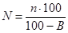
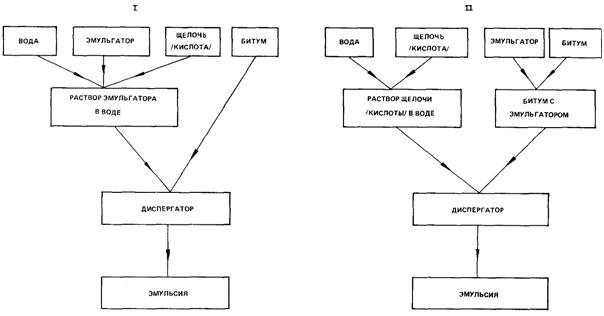
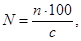
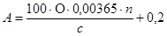
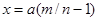
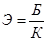
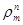
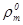
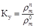

Союздорнии
Минтрансстроя СССР
Пособие
по
приготовлению
и применению битумных
дорожных
эмульсий
(к СНиП 3.06.03-85)
Утверждено приказом
Союздорнии от 25.03.87 № 51
Москва Стройиздат 1989
Изложены основные понятия о дорожных эмульсиях, дана их классификация, способы приготовления; приведены сведения об эмульгаторах, машинах и механизмах для приготовления эмульсий, правила техники безопасности при приготовлении эмульсий. Даются рекомендации в области применения битумных эмульсий в дорожном строительстве, способы подбора составов эмульсионно-минеральных смесей и контроль качества работ, выполненных с применением битумных эмульсий.
Битумные эмульсии, приготовленные в соответствии с настоящим Пособием, могут быть применены не только при строительстве дорожных одежд, но и для других видов строительных работ как гидроизоляционный, вяжущий и пленкообразующий материал для устройства кровель, гидроизоляции и т.п.
Пособие разработано на основе результатов лабораторных исследований и опытно-экспериментальных работ, а также учета отечественного и зарубежного опыта по приготовлению и применению эмульсий.
Для инженерно-технических работников строительных организаций.
Разработано СоюздорНИИ (кандидаты техн. наук И.А. Плотникова, Э.А. Казарновская, Э.М. Рвачева, А.п. Архипова, М.Ф. Никишина, В.В. Назаров, Л.Ф. Ступакова).
1.1. Дорожные эмульсии - вяжущий и пленкообразующий материал, представляющий собой однородную маловязкую жидкость темно-коричневого цвета, состоящую из битума (или дегтя), воды и эмульгатора.
1.2. По структуре дорожные эмульсии делят на два типа: прямые и обратные. В прямых эмульсиях битум равномерно распределен в воде в виде мельчайших (размером 1 - 10 мк) капель, окруженных слоем эмульгатора. В обратных эмульсиях вода равномерно распределена в битуме (или дегте) в виде мельчайших капель, также стабилизированных слоем эмульгатора.
1.3. Прямые эмульсии по виду эмульгатора делят на три вида: анионные (ЭБА), катионные (ЭБК) и пасты.
В анионных эмульсиях эмульгаторами являются анионные поверхностно-активные вещества (ПАВ), в катионных - катионные ПАВ, в пастах - минеральные порошковые материалы.
1.4. Основное различие между вышеуказанными видами эмульсий заключается во взаимодействии с обрабатываемыми материалами.
Анионные эмульсии активно взаимодействуют с основными (содержащими CaO) минеральными материалами, образуя на их поверхности водостойкую пленку. С кислыми (содержащими SiО2) породами анионные эмульсии взаимодействуют слабо, поэтому пленка вяжущего менее водостойка.
Катионные эмульсии активно взаимодействуют с основными и особенно с кислыми минеральными материалами, образуя на поверхности зерен любых горных пород прочную и водостойкую пленку.
Пасты являются малоактивными вяжущими по отношению к любым минеральным материалам.
1.5. Анионные и катионные эмульсии по смешиваемости с минеральными материалами подразделяют на три класса:
анионные ЭБА-1, ЭБА-2, ЭБА-3;
катионные ЭБК-1, ЭБК-2, ЭБК-3.
Эмульсии классов ЭБА-1, ЭБК-1 не смешиваются с минеральными материалами любого зернового состава, при перемешивании они быстро распадаются и выделяющийся при этом битум распределяется в смеси неравномерно в виде крупных сгустков. Эти эмульсии предназначены для нанесения вяжущего тонким слоем на большие открытые поверхности путем розлива или набрызга. Эмульсии класса ЭБА-2 и ЭБК-2 смешиваются только с каменными материалами пористого зернового состава. Эмульсии класса ЭБА-3 и ЭБК-3 смешиваются с минеральными материалами как пористого, так и плотного зернового состава, в том числе содержащими минеральный порошок и пылеватые частицы грунта.
1.6. Обратные эмульсии подразделяются на жидкие ЭО и вязкие ЭО-В.
2.1. Анионные и катионные эмульсии должны отвечать требованиям ГОСТ 18659-81 «Эмульсии битумные дорожные. Технические условия».
2.2. Пасты должны содержать битума 40 - 55 % по массе. Условная вязкость паст при 20 °С должна быть 5 - 20 с.
Пасты должны быть однородными по размеру частиц битума. Массовая доля частиц битума крупнее 1,25 мм не должна быть более 2 %.
Пасты должны быть устойчивыми при хранении: массовая доля частиц крупнее 1,25 мм через 7 сут не должна быть более 4 %, через 30 сут - более 5 %.
2.3. Обратные эмульсии должны содержать вяжущего 70 - 80 % по массе. Вязкость при 60 °С по вискозиметру для нефтяных битумов с отверстием 5 мм для ЭО должна быть 5 - 35, для ЭО-В - 35 - 130 с.
Эмульсии должны быть однородными. На стеклянной палочке, погруженной на 1 с в эмульсию, не должно быть заметных на глаз капелек или блестков воды.
Эмульсии не должны расслаиваться в течение 7 сут при положительной температуре окружающего воздуха.
При смешивании эмульсии с влажным гранитным щебнем, предварительно обработанным известью, вяжущее должно покрывать поверхность щебня равномерно сплошной пленкой.
Эмульсии должны выдерживать испытание на сцепление с гранитным щебнем, предварительно обработанным известью.
3.1. Для приготовления анионных, катионных эмульсий и паст используют битумы нефтяные дорожные по ГОСТ 22245-76*. Марку битума назначают с учетом климатических условий района строительства и конструктивного слоя дорожной одежды. Могут быть использованы битумы с добавками полимеров.
3.2. Для приготовления обратных эмульсий используют: дегти каменноугольные дорожные по ГОСТ 4641-80 марок Д-1, Д-2 и Д-3; битумы сланцевые дорожные (РСТ ЭССР 82-79) марок С-12/20, С-20/35, С-35/70, С-70/130; масло сланцевое ТУ 38.10957-80 и смеси нефтяных битумов марок БНД 40/60, БНД 60/90 и БНД 90/130 со сланцевым маслом.
3.3. В качестве эмульгаторов для анионных эмульсий используют ПАВ типа высших органических кислот (жирные, смоляные, нафтеновые, сульфатонафтеновые) и их солей (мыла) (табл. 1).
Продукты, содержащие высшие органические кислоты, должны иметь число омыления в пределах от 50 до 200 мг КОН на 1 г продукта. Эмульгирующая способность образца эмульгатора должна проверяться в лаборатории.
Для получения анионных эмульсий, как правило, применяют щелочные вещества: едкий натр по ГОСТ 2263-79* жидкое стекло по ГОСТ 13078-81*, триполифосфат натрия по ГОСТ 13493-86*Е.
3.4. В качестве эмульгаторов для катионных эмульсий используют ПАВ типа аминов, диаминов, амидо-аминов и четвертичных аммониевых солей (табл. 2).
Для получения эмульсий применяют соляную кислоту по ГОСТ 857-78* или уксусную кислоту по ГОСТ 6968-76*.
3.5. В качестве эмульгаторов для паст используют: известь (пушонку или молотую кипелку), содержащую не менее 60 % окисей кальция и магния; фильтро-прессную грязь - дефекат - отходы сахарного производства, содержащие не менее 80 % частиц мельче 0,071 мм и другие тонкодисперсные минеральные материалы.
|
Состав, свойства |
|
|
Асидол марки А-2 ГОСТ 13302-77* |
Маслянистая жидкость темно-коричневого цвета, не растворяется в воде, но легко растворяется в щелочных растворах. |
|
Асидол-мылонафт ГОСТ 13302-77* |
Мазеобразное вещество от светло-желтого до коричневого цвета; представляет собой смесь нафтеновых кислот с их натриевыми солями. |
|
Мыло нафтеновое (мылонафт) ГОСТ 13302-77* |
Мазеобразное вещество от светло-коричневого до коричневого цвета; состоит в основном из натриевых солей нафтеновых кислот и воды. Содержит небольшое количество неомыленных веществ и минеральных солей. |
|
Синтетические жирные кислоты (кубовый остаток) ОСТ 38.01182-80 марка Б |
Продукт от твердой до мазеобразной консистенции, от светло-коричневого до темно-коричневого цвета. Состоит в основном из высокомолекулярных жирных кислот. |
|
Контакт Петрова (сульфокислоты нафтеновые, газойлевый контакт) ОСТ 38.01116-76 |
Маловязкая жидкость от коричневого до черного цвета, содержит значительное количество сульфонафтеновых кислот и некоторое количество примеси, в том числе серную кислоту. |
|
Окисленный петролатум ТУ 38-30Д-96-83 |
Однородная паста коричневого цвета, нерастворима в воде. |
|
Сульфатное мыло серое ТУ 81-05-118-77 |
Мазеобразный продукт от желтого до темно-коричневого цвета. Содержит значительное количество натриевых солей смоляных и жирных кислот и некоторое количество других веществ. Хорошо растворяется в воде. |
|
Масло талловое сырое ОСТ 13-184-83Е |
Вязкая жидкость от темно-красного до темно-бурого цвета, содержит смесь смоляных и жирных кислот. |
|
Второй жировой гудрон ОСТУ 30-9121-63 |
Полутвердый или вязкий продукт от коричневого до темно-коричневого цвета, состоит из жирных кислот, нейтрального жира и неомыленных веществ. |
|
Госсиполовая смола (кубовый остаток) ОСТ 18-114-73 |
Продукт, получаемый в виде кубового остатка (гудрон) при дистилляции жирных кислот, выделенных из хлопкового соапстока. Однородная вязко-текучая масса от темно-коричневого до черного цвета. |
|
Смола древесная омыленная (СДО) ТУ 81-05-2-78 |
Вещество черного цвета вязкой или полувязкой консистенции, растворима в воде, рН водного раствора 11 - 12, содержит соли смоляных и других высших кислот. |
|
Жировая масса ТУ 18 УзССР 45-81 |
Вещество коричневого или темно-коричневого цвета мазеобразной консистенции со специфическим запахом жирных кислот. Содержит 20 - 30% воды. |
|
Талловый пек ТУ 81-05-84-80 |
Продукт темно-коричневого цвета от маловязкой до вязкой консистенции, безводный или с небольшим количеством воды. |
|
Смола нейтрализованная воздухововлекающая (СНВ) ТУ 81-05-75-74 |
Продукт темно-коричневого цвета твердой консистенции, хорошо растворим в воде, рН водного раствора 10 - 12. |
|
Пек талловый омыленный марка Б ОСТ 13-145-82 |
Продукт коричневого или темно-коричневого цвета, твердой консистенции, растворяется в горячей воде. |
|
Состав, свойства |
|
|
Присадка адгезионная БП-3 ТУ 38 УССР 201170-78 |
Воскообразный продукт от светло-желтого до светло-коричневого цвета. Температура каплепадения не выше 75 °С. Хорошо растворима в битуме. |
|
Амины алифатические С17 - С20 технические ТУ 6-02-795-78 |
Белый с желтым оттенком воскообразный продукт. Температура плавления 33 - 38 °С. Хорошо растворим в воде. |
|
Четвертичные соли аммония (например, алкилтриметиламмоний хлорид - ATM) ТУ 38.40798-78 |
ATM выпускается в виде 50 - 60 % раствора в изопропиловом спирте. Хорошо растворим в воде. |
3.6. Эмульгаторами для обратных эмульсий являются фенолы, содержащиеся в вяжущем.
При содержании их в вяжущем менее 5 % необходимо добавлять фенолы каменноугольные технические ГОСТ 11311-76*.
Помимо фенолов в состав эмульгатора для обратных эмульсий входят едкий натр и поваренная соль.
3.7. Вода для приготовления эмульсий должна быть с жесткостью не выше 6 мг-экв/л.
3.8. Битумные эмульсии приготовляют на стационарных или передвижных эмульсионных установках.
Стационарные эмульсионные установки обычно размещают на территории асфальтобетонных заводов, что дает значительную экономию средств за счет полного или частичного использования имеющегося на АБЗ парового, энергетического, складского хозяйства, битумоварочного оборудования, лабораторных, производственных и служебных помещений. Возможны случаи, когда целесообразно строить эмульсионные установки как самостоятельные производства.
Передвижные эмульсионные установки (прил. 1) используют, когда необходимо обеспечить эмульсией значительный объем работ при их подвижном фронте.
|
Производительность, т/ч |
Мощность электродвигателя, кВт |
Принцип действия |
Вид эмульсий |
|
|
Многодисковый диспергатор ЭМ-25 |
25 |
14 |
Непрерывный |
Прямые |
|
Многощелевой диспергатор Д-2 |
5 - 7 |
7,5 |
То же |
То же |
|
Многощелевой диспергатор Д-3 |
10 - 12 |
10 |
" |
" |
|
Акустический диспергатор |
7 |
6 |
Периодический |
" |
|
Лопастная мешалка |
3 |
2,8 |
То же |
Обратные |
3.9. Основным технологическим узлом установок являются эмульсионные машины, которые могут быть непрерывного или периодического действия (табл. 3).
Для приготовления битумных паст, кроме лопастных мешалок можно использовать асфальтобетонные смесители, растворо- и бетономешалки принудительного перемешивания, выпускаемые отечественной промышленностью.
3.10. Кроме диспергатора, базы по приготовлению эмульсий должны иметь дополнительное оборудование: битумные котлы для разогрева и обезвоживания битума; емкости для растворения едкого натра и приготовления рабочих растворов щелочи, кислоты и эмульгаторов; насосы; дозаторы.
3.11. Приготовление анионных и катионных эмульсий может осуществляться по двум технологическим схемам (рис. 1). По первой схеме эмульгатор и щелочь (или кислоту) вводят в воду, приготовляют раствор определенной концентрации, а затем подают его и битум в определенных соотношениях в диспергатор, где происходит образование эмульсии.
По второй схеме эмульгатор вводят в битум, щелочь (или кислоту) - в воду, а затем эти компоненты поступают в диспергатор.
3.12. Вид и количество эмульгатора для анионных эмульсий назначают по табл. 4 в зависимости от класса эмульсии.
3.13. В эмульгаторах, содержащих воду, ее количество определяют в соответствии с п. 4.1.
3.14. В эмульгаторах: асидоле, асидол-мылонафте, сульфокислотах определяют кислотное число согласно п. 4.2.
3.15. В эмульгаторах: талловом масле, кубовых остатках синтетических жирных кислот, окисленном петролатуме, госсиполовой смоле и втором жировом гудроне определяют число омыления согласно п. 4.3.
3.16. Количество эмульгатора, необходимое для введения в воду или битум (см. табл. 4), уточняют с учетом воды, содержащейся в продукте по формуле

где N - количество эмульгатора, необходимое для приготовления эмульсии, %; n - количество эмульгатора, %, установленное по табл. 4; В - содержание воды в эмульгаторе, %.

Рис. 1. Технологические схемы приготовления эмульсий
3.17. Количество едкого натра А (в % массы воды) рассчитывают по формуле
где a - кислотное число или число омыления эмульгаторов в соответствии с пп. 3.14 и 3.15 (мг КОН на 1 г); n - количество эмульгатора, %, в соответствии с табл. 4; 0,714 - коэффициент пересчета молекулярного веса от едкого натра к едкому кали; c - избыток едкого натра в водном растворе эмульгатора, % (0,4 - для госсиполовой смолы, 0,1 - 0,12 - для остальных эмульгаторов).
Если едкий натр поступает на производство не в твердом виде, а в растворе, его дозируют с учетом концентрации раствора (табл. 5), которую контролируют ореометрами (денсиметрами).
3.18. Водные растворы эмульгаторов: асидола, асидол-мылонафта, мыла нафтенового, сульфатного мыла, сульфокислот, смолы древесной омыленной, СНВ - приготавливают способом растворения эмульгатора и щелочного вещества (если оно входит в состав) в полной норме воды до рабочей концентрации. В воду, нагретую до температуры около 50 °C, вводят щелочное вещество и эмульгатор (в количестве, соответствующем табл. 4, пп. 3.16 и 3.17), тщательно перемешивают до полного растворения, а затем подогревают раствор до 70 - 80 °C.
Пример. Требуется приготовить 1 т раствора эмульгатора асидола марки А-2. Количество воды в асидоле - 3 %. Кислотное число асидола - 90 мг КОН на 1 мг.
По табл. 4 назначаем количество асидола в растворе - 1,5 %, количество едкого натра рассчитываем по формуле (2):
Пересчитываем количество асидола с учетом содержащейся в нем воды по формуле (1):
Таким образом, на 1 т раствора необходимо: 15,5 кг асидола, 2 кг едкого натра (в случае использования водного раствора едкого натра, его количество назначают с учетом концентрации раствора в соответствии с табл. 5), 982,5 л воды. Воду заливают в емкость, нагревают до 70 - 80 °C, затем вводят в нее вышеуказанное количество асидола и едкого натра, перемешивают до полного растворения.
Рис. 2. Схема хранения битумной эмульсии:
1. Емкость для хранения эмульсии. 2. Эмульсия. 3. Трубопровод для подачи эмульсии от диспергатора в емкость. 4. Трубопровод для закачивания эмульсии из емкости в транспортные средства
|
Количество вещества, вводимое в воду, % массы воды |
Количество вещества, вводимое в битум, % массы битума |
|
|
Эмульсии класса ЭБА-1 |
||
|
Асидол марки А-2 |
1 - 1,5 |
- |
|
Едкий натр |
по п. 3.17 |
- |
|
Жидкое стекло |
0,2 |
- |
|
Асидол-мылонафт |
2 - 2,5 |
- |
|
Едкий натр |
0,1 |
- |
|
Мыло нафтеновое |
2 - 2,5 |
- |
|
Едкий натр |
0,1 - 0,12 |
- |
|
Сульфатное мыло |
1 - 1,5 |
- |
|
Едкий натр |
0,1 - 0,12 |
- |
|
Масло талловое сырое |
1 - 1,5 |
- |
|
Едкий натр |
по п. 3.17 |
- |
|
Госсиполовая смола |
- |
2 - 4,5 |
|
Едкий натр |
0,3 - 0,4 |
- |
|
Окисленный петролатум |
- |
2 - 3 |
|
Едкий натр |
по п. 3.17 |
|
|
Синтетические жирные кислоты (кубовый остаток) |
- |
1,5 - 3,5 |
|
Едкий натр |
по п. 3.17 |
- |
|
Эмульсии класса ЭБА-2 |
||
|
Масло талловое сырое |
2 - 2,5 |
- |
|
Едкий натр |
по п. 3.17 |
- |
|
Сульфатное мыло |
2 - 3 |
- |
|
Едкий натр |
0,2 - 0,3 |
- |
|
Контакт Петрова (сульфокислоты, газойлевый контакт) |
1,2 - 1,4 |
- |
|
Едкий натр |
по п. 3.17 |
- |
|
Синтетические жирные кислоты (кубовый остаток) |
- |
3 - 3,5 |
|
Триполифосфат натрия |
1,5 - 2 |
- |
|
Второй жировой гудрон |
- |
6 - 7 |
|
Триполифосфат натрия |
1,5 - 2 |
- |
|
Жировая масса |
1,5 - 1,8 |
- |
|
Едкий натр |
0,6 - 0,7 |
- |
|
Госсиполовая смола |
- |
4,5 - 5 |
|
Едкий натр |
0,4 - 0,5 |
- |
|
Смола нейтрализованная воздухововлекающая (СНВ) |
2,5 - 2,8 |
- |
|
Эмульсии класса ЭБА-3 |
||
|
Смола древесная омыленная |
6 - 8 |
- |
|
Талловый пек |
- |
15 - 20 |
|
Едкий натр |
0,8 |
- |
|
Контакт Петрова (сульфокислоты, газойлевый контакт) |
2,4 - 2,6 |
- |
|
Едкий натр |
по п. 3.17 |
- |
|
Госсиполовая смола |
6 - 8 |
3 - 5 |
|
Едкий натр |
по п. 3.17 |
- |
|
Второй жировой гудрон |
- |
6 - 8 |
|
Триполифосфат натрия |
2 |
- |
|
Жировая масса |
2 - 2,5 |
- |
|
Едкий натр |
0,6 - 0,7 |
- |
|
Смола нейтрализованная воздухововлекающая (СНВ) |
2,8 - 3 |
- |
|
Пек талловый омыленный |
5 - 10 |
- |
|
Концентрация NaOH, % |
Плотность NaOH, г/см3 |
Концентрация NaOH, % |
Плотность NaOH, г/см3 |
|
2 |
1,023 |
32 |
1,352 |
|
4 |
1,046 |
34 |
1,374 |
|
6 |
1,069 |
36 |
1,395 |
|
8 |
1,092 |
38 |
1,416 |
|
10 |
1,115 |
40 |
1,437 |
|
12 |
1,137 |
42 |
1,458 |
|
14 |
1,159 |
44 |
1,478 |
|
16 |
1,181 |
46 |
1,499 |
|
18 |
1,203 |
48 |
1,519 |
|
20 |
1,225 |
50 |
1,54 |
|
22 |
1,247 |
52 |
1,56 |
|
24 |
1,268 |
54 |
1,58 |
|
26 |
1,289 |
56 |
1,601 |
|
28 |
1,31 |
58 |
1,622 |
|
30 |
1,332 |
60 |
1,643 |
3.19. Водный раствор таллового масла получают путем предварительного приготовления концентрата (мыла) из эмульгатора, щелочного вещества и части воды с последующим разбавлением его остальным количеством воды до рабочей концентрации. В емкость для приготовления мыла загружают эмульгатор в количестве, соответствующем табл. 4 и п. 3.16, заливают 2,5-кратным количеством воды, затем добавляют едкий натр в количестве, соответствующем п. 3.17. Смесь эмульгатора, щелочи и воды кипятят 1 - 2 ч при периодическом перемешивании, пока она не станет однородной. Готовое мыло разбавляют водой до рабочей концентрации.
3.20. Водные растворы анионных эмульгаторов рабочей концентрации независимо от способа приготовления должны быть щелочными, т.е. иметь водородный показатель pH в пределах 9 - 12 (определение см. п. 4.4.). Если рН готового раствора меньше указанных значений, необходимо добавить в раствор едкий натр.
3.21. Эмульгаторы, которые надо вводить не в воду, а в битум, предварительно отвешивают в количестве, соответствующем табл. 4, и загружают в битумный котел к моменту окончания обезвоживания битума. Для равномерного распределения эмульгатора необходимо перемешивать битум. Битум с эмульгатором не рекомендуется держать в нагретом состоянии более суток. При этом способе введения ПАВ щелочное вещество в необходимом по составу количестве растворяют в воде.
3.22. Вид и количество эмульгатора для катионных эмульсий назначают по табл. 2 в зависимости от класса эмульсии. Количество эмульгатора не зависит от концентрации битума в эмульсии.
3.23. Катионные эмульгаторы вводят в воду или в битум в соответствии с табл. 6. Соляную кислоту всегда вводят только в воду.
3.24. Количество эмульгатора для введения в воду или битум, установленное по табл. 6, уточняют по концентрации основного вещества в продукте, указанной в паспорте, по формуле

где N - количество эмульгатора, необходимое для приготовления эмульсии, %; n - количество эмульгатора, %, установленное по табл. 6; c - концентрация основного вещества в продукте, %.
Таблица 6
|
Количество вещества, вводимое в воду, % массы воды |
Количество вещества, вводимое в битум, % массы битума |
|
|
Эмульсии класса ЭБК-1 |
||
|
ATM |
0,5 - 1 |
- |
|
Соляная кислота |
0,2 |
- |
|
Амины С17 - С20 |
- |
1 - 2 |
|
Соляная кислота |
по п. 3.26 |
|
|
Эмульсии класса ЭБК-2 |
||
|
ATM |
2 |
- |
|
Соляная кислота |
0,2 |
- |
|
БП-3 |
- |
2 |
|
Соляная кислота |
по п. 3.26 |
- |
|
Эмульсии класса ЭБК-3 |
||
|
БП-3 |
- |
3 - 4 |
|
Соляная кислота |
по п. 3.26 |
- |
3.25. Для каждой партии соляной кислоты необходимо устанавливать концентрацию путем измерения ореометром (денсиметром) ее плотности (табл. 7).
3.26. Количество соляной кислоты, необходимое для введения в воду при использовании эмульгаторов БП-3 и аминов, рассчитывают по формуле

где A - количество соляной кислоты, % массы воды; О - основность эмульгатора, мл 0,1H раствора HCl; 0,00365 - г-экв 0,1H раствора HCl; n - количество эмульгатора, %, установленное по табл. 6; с - концентрация HCl, %.
Если основность эмульгатора дана в мг КОН на 1 г, то для перевода в мл. 0,1H раствора HCl этот показатель следует разделить на 5,61 (титр 0,1H раствора НО, выраженный в мг КОН на 1 г).
Пример. Требуется приготовить 1 т водного раствора соляной кислоты для получения эмульсии с 3 % БП-3. Соляная кислота имеет плотность 1,179 г/см3, следовательно, концентрация ее (по табл. 7) 36 %. Основность БП-3 41,45 0,1H раствора HCl (или 232,5 мг КОН на 1 г). По формуле (4) находим необходимое количество соляной кислоты
Следовательно, на 1 т водного раствора необходимо 14,6 кг или 12,4 л (14,6:1,179) соляной кислоты.
3.27. Количество соляной кислоты, необходимой для введения в раствор эмульгатора при использовании ATM, устанавливают по табл. 6. Нормы расхода кислоты, указанные в табл. 6, относятся к кислоте 36 %-й концентрации с плотностью 1,179. При наличии кислоты другой концентрации ее количество корректируют по табл. 7.
|
Плотность соляной кислоты, г/см3 |
Коэффициент |
Концентрация HCl, % |
Плотность соляной кислоты г/см3 |
Коэффициент |
|
|
20 |
1,098 |
1,784 |
30 |
1,149 |
1,197 |
|
22 |
1,108 |
1,614 |
32 |
1,159 |
1,113 |
|
24 |
1,119 |
1,486 |
34 |
1,169 |
1,052 |
|
26 |
1,129 |
1,366 |
36 |
1,179 |
1,000 |
|
28 |
1,139 |
1,279 |
38 |
1,189 |
0,951 |
|
40 |
1,198 |
0,905 |
Например, нужно добавить 2,5 кг соляной кислоты с плотностью 1,179, а имеется кислота с плотностью 1,129, тогда ее нужно добавить в количестве 2,5·1,366 = 3,42 кг.
3.28. Эмульгаторы БП-3 и амины вводят в битум, разогретый до рабочей температуры (п. 3.32), и растворяют в нем при перемешивании. Битум с эмульгатором не рекомендуется держать в нагретом состоянии более 8 ч.
3.29. Эмульгатор ATM вводят в воду, приготовляя раствор следующим образом: в нагретую до температуры 65 - 75 °C воду вводят ATM и соляную кислоту и тщательно перемешивают до полного растворения ATM. Готовый раствор должен иметь водородный показатель рН в пределах 1,8 - 2,2.
Значения pH меньше 1,8 свидетельствуют об избытке кислоты, что отрицательно влияет на адгезию эмульгированного битума, более 2,2 - о недостатке кислоты, что ухудшает условия эмульгирования битума.
3.30. Растворы эмульгаторов и кислот приготовляют непосредственно перед их использованием в емкостях, снабженных плотно закрывающимися крышками.
3.31. Процесс приготовления анионных и катионных эмульсий заключается в объединении в эмульсионной машине битума и водного раствора эмульгатора, дозируемых в определенных соотношениях.
3.32. Температура нефтяного битума, поступающего в эмульсионную машину, должна быть, °C:
БНД 40/60, БН 40/60................................. 130 - 140
БНД 60/90, БНД 90/130............................ 120 - 130
БН 60/90, БН 90/130.................................. 120 - 130
БНД 130/200, БН 130/200......................... 100 - 120
БНД 200/300, БН 200/300......................... 90 - 100
3.33. Температура водного раствора эмульгатора, поступающего в эмульсионную машину, должна быть в пределах 70 - 80 °С.
3.34. Температуру битума и раствора эмульгатора следует назначать таким образом, чтобы сумма этих двух температур не превышала 200 °С. В противном случае может произойти вспенивание смеси битума и раствора эмульгатора и выбрасывание ее из эмульсионной машины.
3.35. При приготовлении эмульсии в машине непрерывного действия сперва прогревают машину, краны и трубопроводы, затем включают двигатель и подают водный раствор эмульгатора. После того как раствор заполнит эмульсионную машину и станет вытекать из выходного отверстия, начинают подачу битума. Отрегулировав подачу битума и раствора эмульгатора в соотношении, обеспечивающем нужную концентрацию эмульсии, отключают обогрев кожуха машины.
3.36. Учитывая неточность объемной дозировки компонентов при непрерывном процессе получения эмульсии, рекомендуется подавать битум в количестве, несколько большем требуемого с тем, чтобы окончательно откорректировать концентрацию эмульсии в емкости для готовой продукции путем разбавления раствором эмульгатора, количество которого рассчитывают по формуле

где x - количество раствора эмульгатора, необходимого для разбавления эмульсии, т; а - количество эмульсии, подлежащей разбавлению, т; т - концентрация эмульсии, подлежащей разбавлению, %; n - требуемая концентрация эмульсии, %.
3.37. В течение всего процесса приготовления эмульсии температура битума, поступающего в машину, должна быть строго постоянной, в противном случае будет изменяться скорость его истечения через дозировочные вентили (или другие объемные дозирующие устройства), что вызовет изменение концентрации эмульсии.
3.38. Температура готовой эмульсии, выходящей из эмульсионной машины, должна быть не выше 90 °С.
3.39. При приготовлении эмульсии в машине периодического действия - акустическом диспергаторе - количество раствора эмульгатора и битума, необходимое для одного цикла, предварительно рассчитывают с учетом: емкости бака диспергатора; получения эмульсии требуемой концентрации; заполнения бака настолько, чтобы гидродинамический преобразователь (вибратор) был постоянно погружен в жидкость.
В прогретый бак диспергатора заливают отмеренный объемным дозатором раствор эмульгатора и включают насос для циркуляции этого раствора через вибратор. После установившегося колебательного движения пластины вибратора из второго объемного дозатора начинают подавать битум со скоростью 30 - 40 л/мин. После подачи всей порции битума циркуляцию продолжают еще 5 - 7 мин, затем откачивают образовавшуюся эмульсию из бака и цикл повторяют.
3.40. Приготовив анионную эмульсию, эмульсионную машину промывают раствором эмульгатора, затем горячей водой.
|
Наименование вяжущего |
Состав эмульсии, % |
||||
|
вяжущее |
едкий натр |
поваренная соль |
вода |
||
|
ЭО |
Дегти каменноугольные |
70 - 80 |
1 |
2 - 5 |
27 - 14 |
|
ЭО |
Битумы сланцевые (или масло сланцевое) |
70 - 80 |
1 |
2 - 5 |
27 - 14 |
|
ЭО-В |
Битумы нефтяные Битумы сланцевые (или масло сланцевое) |
28 - 32 42 - 48 |
1 |
2 - 5 |
27 - 14 |
3.41. Закончив приготовление катионной эмульсии, во избежание коррозии металла необходимо промыть горячей водой оборудование, через которое проходят водные растворы (емкость для приготовления эмульгатора, дозировочный бачок, диспергатор, трубопроводы и насосы).
Наибольшую опасность для металла представляет соляная кислота как в концентрированном, так и в разбавленном виде. Катионные эмульгаторы являются ингибиторами коррозии, поэтому их водные растворы, даже если в их состав входит соляная кислота, существенной коррозии не вызывают. Готовая катионная эмульсия металл не разрушает.
3.42. При приготовлении обратных эмульсий количество компонентов назначают по табл. 8.
3.43. При приготовлении обратных вязких эмульсий ЭО-В предварительно составленную смесь из нефтяного битума и сланцевого масла нагревают до температуры 60 - 80 °C, водный раствор едкого натра и поваренной соли нагревают до 30 - 40°С.
При приготовлении обратных жидких эмульсий ЭО вяжущее нагревают в зависимости от вязкости до 20 - 60 °С. Температуру вяжущего назначают из условия подачи его в мешалку насосом. Водный раствор соли и едкого натра не подогревают. Прогревают лопастную мешалку, краны, трубопроводы и дозаторы. Вяжущее и водный раствор заливают в дозаторы в количестве, соответствующем данным в табл. 8. Сперва в мешалку подают вяжущее, затем при непрерывном перемешивании со скоростью лопастей 60 - 80 об/мин подают водный раствор. Окончив подачу раствора, перемешивают еще 5 - 8 мин. Готовую эмульсию сливают в хранилище или в расходную емкость через отверстие в дне мешалки и цикл повторяют.
3.44. При приготовлении паст в мешалку сперва подают порошкообразный эмульгатор, в полном количестве, соответствующем составу пасты (табл. 9), затем воду, предварительно подогретую до 50 - 70 °C, в количестве 30 - 50 % требуемого по составу. Порошок и воду перемешивают 20 - 30 с до получения равномерной тестообразной массы с плотностью 1,38 - 1,4 г/см. В приготовленное тесто при непрерывном перемешивании постепенно, несколькими порциями вливают поочередно битум и оставшуюся воду. Время перемешивания теста с битумом до получения пасты составляет в зависимости от типа смесителя 60 - 120 с. Готовую пасту выгружают из мешалки в транспортные средства или в запасную емкость.
|
Количество вещества, % |
|
|
Известь молотая (кипелка) |
8 - 12 |
|
Вода |
42 - 33 |
|
Битум |
50 - 55 |
|
Известь-пушонка |
15 - 20 |
|
Вода |
40 - 30 |
|
Битум |
45 - 50 |
|
Фильтропрессная грязь |
25 - 30 |
|
Вода |
35 - 20 |
|
Битум |
40 - 50 |
3.45. В процессе приготовления эмульсий следует контролировать:
точность дозирования компонентов эмульгатора при приготовлении водных растворов или введения ПАВ в битум;
водородный показатель рН водных растворов эмульгатора;
температуру битума и раствора эмульгатора, поступающих в эмульсионную машину, температуру готовой эмульсии, вытекающей из машины (непрерывный контроль - автоматический);
точность дозирования битума;
однородность эмульсии путем погружения стеклянной палочки в готовую эмульсию (периодическая визуальная оценка). При хорошем качестве эмульсии палочка покрывается однородной темно-коричневой пленкой. Не допускается в пленке комочков или нитей битума.
3.46. Готовые эмульсии должны быть приняты техническим контролем предприятия-изготовителя.
Приемку эмульсии производят партиями. Размер партии эмульсии устанавливают в количестве сменной выработки одной установки, но не более 50 т.
Для контроля качества эмульсии следует отбирать по две пробы от каждой партии эмульсии. Каждая проба не должна быть менее 2 л. Пробы отбирают из емкости, где находится готовая эмульсия, сосудом вместимостью 2,5 - 3 л, погружаемым в эмульсию на глубину, равную половине толщины слоя эмульсии в емкости.
Пробы эмульсии отбирают и испытывают через сутки после ее приготовления.
Приемочный контроль каждой партии эмульсии производит предприятие-изготовитель по следующим показателям:
содержание битума с эмульгатором;
смешиваемость эмульсии с минеральными материалами;
однородность.
3.47. Предприятие-изготовитель обязано также производить периодический контроль эмульсий по следующим показателям: условной вязкости, устойчивости при хранении, сцепления пленки вяжущего с минеральными материалами, устойчивости при транспортировании, а также глубины проникания иглы, растяжимости и температуры размягчения битума, выделенного из эмульсии.
Периодический контроль следует осуществлять не реже одного раза в квартал и при каждом изменении материалов, применяемых при приготовлении эмульсий, а также при изменении состава эмульсии.
3.48. Эмульсии можно хранить на месте их приготовления и на месте применения. В обоих случаях лучшим способом является хранение в вертикальных цилиндрических емкостях (рис. 2). Не рекомендуется хранить эмульсии в емкостях прямоугольного сечения во избежание скопления битума в углах емкости.
3.49. Емкости для эмульсии должны быть чистыми; перед наполнением их следует промыть горячей водой или обработать паром. Во избежание загрязнения битумной эмульсии, испарения из нее воды, а также попадания дождя емкости должны плотно закрываться.
3.50. Не допускается сливать в одну емкость эмульсии различного состава, так как это приводит к распаду, т.е. необратимому разделению на битум и воду.
3.51. Наполнять емкость и отбирать из нее эмульсии следует снизу. При необходимости наполнения сверху конец сливного патрубка (шланга) опускают в глубь эмульсии, чтобы не допускать ценообразования или распада заливаемой эмульсии вследствие ударов ее о поверхность эмульсии, находящейся в емкости.
3.52. Эмульсии допускается хранить при температуре воздуха не ниже 0 °С. Срок хранения эмульсий классов ЭБА-1, ЭБА-2, ЭБК-1, ЭБК-2 - один месяц со дня приготовления, эмульсий классов ЭБА-3 и ЭБК-3 - два месяца со дня приготовления.
3.53. При длительном (в течение 2 недель и более) хранении допускается некоторое расслоение эмульсии, т.е. изменение концентрации битума по высоте емкости без образования неразмешиваемых комков и сгустков. Длительно хранившуюся эмульсию перед использованием необходимо тщательно перемешать.
3.54. Пасты можно хранить в течение 6 мес. при температуре воздуха до минус 15 °С. При хранении паста оседает и уплотняется, поэтому перед применением ее необходимо перемешивать. Во избежание пересыхания пасты над ее поверхностью должен быть постоянный слой воды 2 - 5 см.
3.55. Обратные эмульсии разрешается хранить без потери качества в течение недели при температуре воздуха до минус 5 °С. Обратные вязкие эмульсии хранят в обогреваемых емкостях.
3.56. Для транспортирования эмульсий могут быть использованы автогудронаторы, битумовозы, железнодорожные цистерны, цистерны емкостью 1 - 2 т, смонтированные на грузовых автомобилях, металлические бочки емкостью от 100 до 500 л. При наполнении транспортных средств следует соблюдать требования пп. 3.50 - 3.51.
При наполнении транспортных средств эмульсию следует пропускать через сетчатый фильтр с размером отверстий 3 мм, надетый на заборный конец шланга.
3.57. Для транспортирования паст могут быть использованы: автомобили-самосвалы, ящики или бочки, не пропускающие воду.
3.58. Предприятие-изготовитель должно сопровождать каждую партию эмульсии документом, удостоверяющим качество, в котором указывают:
наименование и адрес предприятия-изготовителя;
номер и дату составления документа;
класс эмульсии и наименование эмульгатора;
результаты испытаний (глубину проникания иглы для битума, использованного при изготовлении эмульсий, содержание битума с эмульгатором, условную вязкость эмульсии);
дату изготовления эмульсии;
обозначение нормативного документа.
4.1. Содержание воды в эмульгаторах определяется по ГОСТ 2477-65*.
4.2. Основность эмульгаторов и кислотное число определяют по ГОСТ 11362-76*.
4.3. Число омыления выражается количеством миллиграммов едкого кали, необходимого для омыления всех свободных и связанных кислот, содержащихся в 1 г кислотного продукта.
Для светлоокрашенных продуктов число омыления определяется по ГОСТ 17362-71*.
Для темноокрашенных эмульгаторов - по следующей методике.
Навеску эмульгатора 1 - 2 г, отвешенную на аналитических весах, помещают в коническую колбу. В колбу вливают 20 мл бензола и растворяют в нем навеску эмульгатора. В колбу с растворенным эмульгатором добавляют 25 мл 0,5H спиртового раствора едкого кали и кипятят с обратным холодильником в течение 1,5 - 2 ч. Одновременно в тех же условиях и такой же колбе кипятят такую же смесь из бензола со спиртовым раствором едкого кали, но без навески (слепой опыт). После прекращения нагревания промывают трубку холодильника 3 - 5 мл нейтрализованного этилового спирта.
Каждую из колб помещают на магнитную мешалку, опускают в раствор электроды потенциометра (на глубину 10 - 12 мм) и магнит для перемешивания раствора и отмечают первоначальное значение pH.
Титрование производят обратное, т.е. в контрольную и рабочую пробы вводят 25 мл 0,5H спиртового раствора НCl, а затем оттитровывают 0,5H раствором КОН до pH более 10. Титрование ведут медленно, добавляя титрованный раствор порциями по 0,1 мл, причем каждую последующую порцию титрана добавляют только после того, как стрелка pH-метра примет устойчивое положение.
Число омыления рассчитывают на сухое вещество по формуле
где V1 - количество 0,5H раствора КОН, израсходованного на титрование рабочей пробы, мл; V2 - количество того же раствора КОН израсходованного на титрование слепого опыта, мл; Ткон - титр 0,5H раствора КОН, мг; g - навеска эмульгатора, г; В - содержание воды в эмульгаторе, %.
Значения V1 и V2 устанавливают расчетным или графическим интерполированием для рН - 10. Титр КОН устанавливают потенциометрически по спиртовому раствору 0,5H HCl, приготовленному из фиксанала.
4.4. Водородный показатель рН водных растворов эмульгаторов определяют индикаторной бумагой (экспресс-метод) или потенциометром. При применении экспресс-метода полоску индикаторной бумаги погружают в испытуемый раствор, вынимают из него и немедленно сравнивают полученную окраску бумаги с прилагаемой шкалой цветности, соответствующей различным значениям рН (от 1 до 14).
Для определения рН потенциометром используют рН-метры. Измерения выполняют в соответствии с инструкциями, прилагаемыми к приборам.
4.5. Содержание фенолов в дегтях определяют в соответствии с ГОСТ 4641-80 п. 4.7.
4.6. Содержание активных СаО и MgO в извести определяют по ГОСТ 22688-77.
4.7. Прямые эмульсии испытывают в соответствии с требованиями ГОСТ 18659-81.
4.8. Обратные эмульсии испытывают по методикам, изложенным в пп. 4.9 - 4.14. Из приготовленной партии обратной эмульсии отбирают 1 - 2 кг в фарфоровый, эмалированный или стеклянный сосуд. Перед взятием пробы эмульсию тщательно перемешивают.
4.9. Содержание воды в обратной эмульсии определяют по ГОСТ 2477-65*.
4.10. Вязкость обратных эмульсий определяют навискозиметре для нефтяных битумов с отверстием 5 мм при температуре 60 °С.
Вискозиметр устанавливают горизонтально с помощью установочных винтов.
Внутреннюю поверхность цилиндра вискозиметра, а также шариковый клапан тщательно промывают бензином или другим растворителем и просушивают воздухом. Сточное отверстие цилиндра закрывают шариковым клапаном и подставляют под него фарфоровую чашку. Баню вискозиметра наполняют водой с температурой (60 ± 2 °С). Эмульсию с температурой (60 ± 2 °С) наливают в цилиндр вискозиметра так, чтобы боковой шлифт отвесно поставленного шарикового клапана был погружен в продукт до половины своего диаметра.
Фарфоровую чашку убирают из-под сточного отверстия вискозиметра и на ее место подставляют чистый сухой измерительный цилиндр так, чтобы при сливе продукт не разбрызгивался по стенкам цилиндра.
Затем быстро поднимают за стержень шариковый клапан и вешают его на край цилиндра или на специальный держатель. В момент, когда уровень эмульсии достигнет в измерительном цилиндре метки 25 мл, включают секундомер. Когда уровень продукта достигнет метки 75 мл, секундомер останавливают и вычисляют время испытания.
За условную вязкость, выраженную в секундах, принимают время истечения 50 мл эмульсии. За результат принимают среднее арифметическое значение результатов двух параллельных определений.
4.11. Однородность обратной эмульсии определяют визуально по наличию в эмульсии непроэмульгированных объемов воды. В эмульсию на 1 с погружают стеклянную палочку. Затем палочку вынимают и по мере стекания эмульсии просматривают поверхность. На поверхности эмульсии не должно быть непроэмульгированных или коагулированных капель воды.
4.12. Устойчивость при хранении обратных эмульсий, т.е. способность ее оставаться однородной без образования в эмульсии объемов воды в процессе хранения, определяют следующим образом.
В каждый из двух цилиндров вместимостью по 250 мл наливают по 200 мл эмульсии. Цилиндры плотно закрывают и оставляют на хранение в спокойном состоянии при комнатной температуре на 7 сут.
По истечении 7 сут оценивают визуально однородность эмульсии. Если наблюдается расслаивание, то после перемешивания однородность эмульсии должна восстанавливаться. В противном случае считают, что эмульсия не выдержала испытание.
4.13. Определение способности обратной эмульсии обрабатывать влажный каменный материал заключается в перемешивании каменного материала с оптимальным количеством извести и обратной эмульсии или извести и обратной и прямой эмульсиями и визуальной оценке величины поверхности покрытой пленкой вяжущего.
Щебень массой 1 кг, размером 5 - 15 мм промывают, высушивают 2 час при температуре 105 °C, после чего охлаждают.
200 г щебня увлажняют 3 % воды, перемешивают, добавляют 0,5 % извести-пушонки. После тщательного перемешивания увлажненного щебня с известью добавляют 4 % (в пересчете на исходное вяжущее) обратной эмульсии ЭО и снова тщательно перемешивают. Поверхность щебня после обработки эмульсией должна быть покрыта сплошной пленкой вяжущего.
При определении способности обволакивания щебня обратными вязкими ЭО-В эмульсиями перед обработкой эмульсию и щебень нагревают до 40 - 60 °С.
При определении способности обволакивания щебня двумя эмульсиями - обратной ОЭ и прямой ЭБА-2 или ЭБА-3 200 г щебня фракции 5 - 15 мм увлажняют 3 % воды, перемешивают, добавляют 0,5 % извести-пушонки, снова тщательно перемешивают, затем добавляют 2,1 % обратной эмульсии, тщательно перемешивают, добавляют 4,8 % прямой эмульсии ЭБА-2 или ЭБА-3. Производят перемешивание в течение 30 с и раскладывают по бумаге.
Способность к обволакиванию считается удовлетворительной, если необработанными обратной эмульсией остаются только углубления на поверхности щебня, а прямой эмульсией обволакивается не менее 90 % поверхности.
4.14. Сцепление пленки вяжущего с минеральными материалами оценивают визуально по величине поверхности минерального материала, предварительно обработанного обратной вязкой эмульсией или обратной жидкой эмульсией в сочетании с битумной эмульсией прямого типа, после кипячения его в воде.
Обработанный эмульсиями, как указано в п. 4.13, щебеночный материал раскладывают слоем в одну щебенку и выдерживают при комнатной температуре в течение 30 мин. Затем 100 г материала помещают на металлическую сетку, подвешивают ее в стакане с кипящей водой и кипятят 30 мин, после чего бумагой снимают с поверхности воды пленку вяжущего, вынимают сетку, щебень раскладывают на бумагу и визуально по величине поверхности, покрытой пленкой вяжущего, определяют сцепление вяжущего с минеральным материалом. Если не менее трех четвертей (75 %) поверхности щебня покрыто битумной пленкой, то считают, что эмульсия выдержала испытание.
4.15. Условную вязкость паст определяют в соответствии с п. 4.10, но при температуре 20 °С.
4.16. Однородность пасты определяется по остатку битума на сите с сеткой № 1,25 после процеживания через него пасты и выражается в % массы пасты.
Сито тщательно промывают водой с моющим средством, а затем чистой водой, высушивают и охлаждают до комнатной температуры. Сито помещают в чашку и взвешивают с точностью до 0,01 г, затем сито вынимают из чашки и обильно смачивают водой. Дают воде стечь и устанавливают сито над сосудом вместимостью не менее 2 л.
В стеклянный стакан отвешивают 100 г пасты и разбавляют ее 500 см3 воды, тщательно перемешивая стеклянной палочкой.
Разведенную пасту равномерно и непрерывно процеживают через сито. Освобождаемый от пасты стакан и стеклянную палочку промывают водой, сливая ее на сито. Остаток на сите также промывают водой до получения прозрачных промывных вод, не содержащих следов пасты.
После этого сито ставят в чашку, с которой его предварительно взвешивали, и сушат до постоянной массы при температуре 105 - 110 °С, охлаждают до комнатной температуры и взвешивают вместе с чашкой с точностью 0,01 г.
Однородность устанавливают по остатку на сите в % и вычисляют по формуле с точностью 0,01 %
где g1 - масса сита и чашки, г;
g2 - масса сита с остатком и чашкой, г;
g3 - мgасса пасты, г.
Максимальное расхождение между результатами параллельных определений не должно превышать 0,05 %, если это расхождение больше, то определение повторяют.
За результат принимают среднее арифметическое значение результатов двух параллельных определений.
4.17. Устойчивость при хранении оценивают по изменению однородности пасты, характеризуемой остатком на сите с сеткой № 1,25 при процеживании через него пасты после 7 и 30 суток хранения.
В каждые из четырех сосудов вместимостью по 250 мл отвешивают по 200 г пасты с точностью 0,01 г. Сосуды плотно закрывают и оставляют на хранение в спокойном состоянии при комнатной температуре.
По истечении 7 сут проводят испытание пасты из двух сосудов в соответствии с п. 4.16. Из двух других цилиндров пасту испытывают через 30 сут хранения.
5.1. Рекомендуемая область применения битумных эмульсий для дорожного строительства приведена в табл. 10. На рис. 3 даны принципиальные конструкции дорожных одежд, устраиваемых с применением битумных эмульсий.
Расчетные модули упругости конструктивных слоев, устраиваемых с применением эмульсий, приведены в табл. 11.
5.2. Область применения эмульсионно-минеральных смесей в конструктивных слоях дорожных одежд в основном та же, что и аналогичных из битумоминеральных смесей, приготовленных горячим способом.
Особые случаи применения некоторых разновидностей эмульсионно-минеральных смесей оговорены в соответствующих разделах Пособия.
Технология приготовления смесей с применением эмульсий зависит от зернового состава смесей, а именно от содержания тонкодисперсной части смеси, которая наиболее активна по отношению к битумной эмульсии. Смеси различного зернового состава требуют применения эмульсий разных классов. Состав смеси и класс эмульсии определяют в свою очередь особенности технологии производства работ в каждом конкретном случае.
5.3. Эмульсионно-минеральные смеси отличаются от горячих битумоминеральных более длительным сроком формирования.
Процесс формирования зависит от активности взаимодействия эмульгатора с минеральными материалами и возможности удаления воды из смеси.
Катионные эмульсии активно взаимодействуют с минеральными материалами, обеспечивая хорошую адгезию битумной пленки и быстрое формирование материала.
Эмульгаторы анионных эмульсий мало активны или даже инертны по отношению к поверхности минеральных материалов. Для усиления адгезионных и когезионных связей в эмульсионно-минеральных смесях на анионных эмульсиях в их состав вводят известь или цемент, с которыми эмульгатор вступает в химическое взаимодействие, стимулируя тем самым распад эмульсии и образование адгезионных связей. При этом часть воды уходит на гидратацию этих активаторов. Все это ускоряет процесс формирования смесей и улучшает их физико-механические свойства. Особенно эффективно использовать в качестве добавки цемент. Он реагирует с водой длительное время, постепенно отбирая ее из пленки и из пор и образуя в структуре материала жесткие связи, способствующие значительному увеличению его прочности. Использование цемента особенно эффективно в эмульсионно-минеральных смесях из гравийных и песчаных материалов, не обогащенных дроблеными зернами.
На процесс формирования оказывают влияние также и погодно-климатические факторы.
Все сказанное выше обусловливает особенности в технологии работ, необходимые для обеспечения качества и несущей способности слоев из эмульсионног минеральных смесей.
|
Вид эмульсии |
Дорожно-климатические зоны |
|
|
Устройство конструктивных слоев дорожных одежд из различных видов эмульсионно-минеральных смесей, приготовляемых в установке: |
||
|
черный щебень |
ЭБК-2, ЭБА-2; ЭО-В, ЭО - совместно с ЭБА-2 или ЭБА-3 |
I - V |
|
пористые щебеночные смеси |
ЭБК-2, ЭБА-2 |
II - V |
|
плотные щебеночные, гравийные и гравийно-песчаные смеси |
ЭБК-3, ЭБА-3 |
II - V |
|
песчаные, обработанные эмульсией и цементом |
ЭБА-3 |
II - V |
|
Устройство конструктивных слоев дорожных одежд из щебня, обработанного эмульсией способом пропитки |
ЭБА-2, ЭБК-2 |
II - V |
|
Устройство конструктивных слоев дорожных одежд из минеральных материалов (щебня, гравия, песка), обработанных эмульсией способом смешения на дороге |
ЭБА-3, пасты |
II - V |
|
Устройство поверхностной обработки покрытий с использованием: |
||
|
фракционированного щебня |
ЭБК-1, ЭБК-2, ЭБА-1, ЭБА-2, пасты |
I - V II - V III - V |
|
эмульсионно-минеральных смесей |
ЭБК-2, ЭБК-3 |
I - V |
|
битумных шламов |
пасты |
III - V |
|
Уход за свежеуложенным цементобетоном и цементогрунтом |
ЭБА-1, ЭБА-2 |
II - V |
|
Укрепление поверхности откосов земляного полотна, закрепление песков в верхнем слое земляного полотна, закрепление подвижных песков |
ЭБА-3 |
II - V |
|
Подгрунтовка |
Прямые эмульсии всех классов |
I - V |
|
Обеспыливание |
ЭБА-3 |
II - V |
Рис. 3. Схемы конструкций дорожных одежд для дорог II - V категорий, устраиваемых с применением эмульсии:
1. Плотный асфальтобетон. 2. Пористый асфальтобетон. 3. Плотная эмульсионно-минеральная смесь. 4. Поверхностная обработка на битумной эмульсии. 5. Подобранные щебеночные смеси, обработанные битумной эмульсией. 6. Подобранные гравийные смеси, обработанные битумной эмульсией с добавлением 30 % щебня. 7. Гравийные, гравийно-песчаные смеси, обработанные битумной эмульсией совместно с цементом. 8. Щебень, обработанный эмульсией по способу пропитки. 9. Щебеночные, гравийные, песчаные материалы и грунты, укрепленные неорганическими вяжущими. 10. Песок
5.4. Щебень, обработанный эмульсией, можно использовать непосредственно после приготовления или заготавливать впрок, т.е. хранить в штабелях. Такой способ не только устраняет зависимость строительных объектов от смесительной установки, но и ускоряет процесс формирования конструктивных слоев благодаря формированию пленки вяжущего на щебне в период хранения.
5.5. Щебень применяют как основных, так и кислых пород, смесь фракций или одну узкую фракцию. Содержание в щебне пылевидных, илистых или глинистых частиц должно соответствовать ГОСТ 8267-82, ГОСТ 10260-82.
5.6. Для обработки щебня применяют эмульсии ЭБК-2 и ЭБА-2, а также обратные эмульсии вязкие ЭО-В и жидкие ЭО в сочетании с прямыми ЭБА-2, ЭБА-3.
5.7. Эмульсии, используемые для обработки щебня, должны выдерживать испытание на водоустойчивость пленки по ГОСТ 18659-81 для прямых эмульсий и по п. 4.14 - для обратных. Испытания проводят на щебне, предназначенном для обработки. Если прямая анионная эмульсия не выдерживает испытания, в щебень необходимо вводить 6,5 % извести от массы щебня. Известь можно вводить в виде известкового молока, содержащего не более 30 % извести.
|
Модуль Е, МПа |
|
|
Щебень и пористые щебеночные смеси, обработанные эмульсией: |
|
|
щебень 1-го и 2-го классов |
600 - 800 |
|
щебень 3-го класса |
500 - 600 |
|
Щебеночные смеси плотные, обработанные эмульсией |
600 - 900 |
|
Гравийные смеси оптимального зернового состава, с 25 - 40 % дробленых зерен, обработанные эмульсией |
400 - 500 |
|
Гравийные и гравийно-песчаные смеси, обработанные двумя вяжущими - битумной эмульсией и цементом |
500 - 700 |
|
Песчаные эмульсии, обработанные двумя вяжущими - битумной эмульсией и цементом |
400 - 600 |
|
Щебень 1-го и 2-го классов, обработанный эмульсией по способу пропитки |
400 - 600 |
Примечание. Модули упругости позиций 1 - 5 даны для материалов, обработанных вяжущим в установке; для соответствующих материалов, обработанных вяжущим на дороге, значения модулей упругости должны быть снижены на 20 %.
5.8. При обработке щебня, предназначенного для укладки сразу после приготовления, используют эмульсии, содержащие битум марок БНД 40/60, БНД 60/90, БНД 90/130, БН 60/90, БН 90/130.
Для щебня, заготавливаемого впрок, применяют прямые эмульсии, приготовленные на битумах пониженной вязкости с глубиной проникания иглы (200 - 250) 0,1 мм, обратные ЭО-В и ЭО в сочетании с прямыми ЭБА-2, ЭБА-3, приготавливаемыми на битумах марок БНД 40/60 и БНД 60/90.
Битумы с глубиной проникания (200 - 250) 0,1 мм могут быть получены на нефтеперерабатывающем заводе либо на эмульсионной базе путем разжижения более вязкого битума. В качестве разжижителя рекомендуется дизельное топливо (ТУ 305-82), моторное топливо (ГОСТ 1667-68*), мазут (ГОСТ 10585-75*), сланцевое масло (ГОСТ 4806-79*). В зависимости от вязкости исходного битума количество разжижителя может быть в пределах 5 - 12 % и подбирается в лаборатории.
5.9. Количество эмульсии, необходимое для обработки щебня, зависит от его крупности, природы материала и характера его поверхности и составляет 1,5 - 4,5 % в пересчете на битум (см. табл. 12.). В конкретном случае необходимое количество эмульсии для обработки щебня определяется пробными замесами.
При обработке щебня обратной эмульсией совместно с прямой 40 % вяжущего вводят в виде обратной эмульсии и 60 % в виде прямой.
|
Количество битума (дегтя), % массы щебня |
|||
|
Обработка прямой или обратной эмульсией |
Обработка прямой эмульсией совместно с обратной |
||
|
Количество сланцевого битума или каменноугольного дёгтя, вводимого в виде обратной эмульсии |
Количество битума, вводимого в виде прямой эмульсии |
||
|
Щебень: |
|||
|
25 - 40 |
1,5 - 3 |
1,2 |
1,8 |
|
15 - 25 |
2 - 3,5 |
1,4 |
2,1 |
|
5 - 15 |
2,5 - 4,5 |
1,6 |
2,4 |
|
5 - 10 |
3 - 4,5 |
1,8 |
2,7 |
|
Щебеночные смеси, содержащие около 5 % частиц размером 0,071 мм: |
|||
|
0 - 35 |
3,5 - 4,5 |
- |
- |
|
0 - 20 |
4,0 - 5,5 |
- |
- |
Примечание. Количество эмульсии
рассчитывают по формуле: 
5.10. Щебень обрабатывают в смесителях принудительного действия, обеспечивающих дозирование всех компонентов. При обработке прямой эмульсией сначала в смеситель подают щебень и известь (известковое молоко), если это требуется для улучшения водостойкости пленки вяжущего, затем вводят эмульсию. При обработке обратной вязкой эмульсией щебень сначала обязательно перемешивают с известью, затем с обратной эмульсией. Если обрабатывают щебень двумя эмульсиями, сначала его перемешивают с известью, затем с обратной эмульсией и наконец с прямой. При работе с прямыми или с обратными жидкими эмульсиями ЭО в сочетании с прямыми, как правило, не требуется подогрева минеральных материалов и эмульсии. Обратную эмульсию вязкую ЭО-В нагревают до 60 - 70 °С, а обрабатываемый ею щебень до 20 - 60 °С.
5.11. Готовый черный щебень выгружают в автомобили - самосвалы и отвозят к месту складирования или на строительный объект. Местом складирования черного щебня может служить открытая, тщательно спланированная бульдозером площадка. Во избежание загрязнения щебня грунтом и для обеспечения дренажа воды, вытекающей из смеси в процессе ее формирования, и дождевой воды, площадку засыпают слоем песка толщиной в несколько сантиметров. Щебень укладывают в штабель, высоту и объем которого устанавливают исходя из производительности смесительной установки, размеров площадки, предполагаемых сроков хранения.
5.12. Щебень, обработанный эмульсией, может храниться в штабеле не слеживаясь несколько месяцев. Образующаяся со временем корка плотного материала не препятствует разработке штабеля. В процессе разработки и погрузки она разрыхляется. Черный щебень погружают экскаватором или погрузчиком, транспортируют к месту работ автомобилями - самосвалами.
5.13. Черный щебень укладывают асфальтоукладчиком или автогрейдером в соответствии с «Инструкцией по устройству покрытий и оснований из щебеночных, гравийных и песчаных материалов, обработанных органическими вяжущими» (ВСН 123-77). Работы по укладке черного щебня из штабеля в конструктивный слой можно выполнять при температуре воздуха до -5 °С. Свежеприготовленный щебень, обработанный анионной эмульсией, укладывают в конструктивный слой при температуре воздуха не ниже 10, катионной - не ниже 5, обратной совместно с прямой или одной обратной - до -5 °С.
5.14. Для уплотнения, которое начинают сразу после распределения черного щебня, применяют средние и тяжелые катки как с металлическими вальцами, так и на пневматических шинах. Если при уплотнении щебень прилипает к катку, поверхность укладываемого слоя Нужно присыпать небольшим количеством песка.
5.15. Если по устроенному конструктивному слою сразу открывают движение транспортных средств, поверхность слоя из черного щебня в процессе уплотнения необходимо присыпать песком из расчета 3 - 5 кг/м2.
5.16. При стадийном строительстве слои из щебня, обработанного эмульсией, могут служить покрытиями при условии устройства на них поверхностной обработки.
5.17. Рекомендуемый зерновой состав пористых щебеночных смесей, полученных дроблением горной породы без последующего разделения на фракции или составленных из щебня различных фракций и отсева продуктов дробления или природного песка, приведен на рис. 4.
5.18. Свойства смесей, обработанных эмульсиями, должны соответствовать требованиям п. 6.6.
5.19. Для обработки щебеночных смесей из кислых пород целесообразно использовать катионные эмульсии классов ЭБК-2, ЭБК-3, обеспечивающие хорошее сцепление эмульгированного битума со щебнем и быстрое формирование смеси, а также обратные вязкие ЭО-В и жидкие ЭО в сочетании с прямыми эмульсиями ЭБА-2 и ЭБА-3. В случае применения обратных эмульсий минеральный материал необходимо предварительно обработать известью.
Для обработки щебеночных смесей из основных пород рекомендуются как катионные, так и анионные эмульсии классов ЭБК-2, ЭБК-3, ЭБА-2, ЭБА-3.
5.20. Для обработки щебеночных смесей, содержащих до 15 % частиц мельче 1,25 мм (в том числе не более 2 % пыли и глины), целесообразно применять эмульсии ЭБА-2, ЭБК-2.
При большем содержании вышеуказанных фракций необходимо применять эмульсии ЭБК-3, ЭБА-3.
Рис. 4. Кривые зернового состава пористых щебеночных смесей
5.21. Если эмульсии, используемые для обработки щебеночных смесей, не обеспечивают необходимого коэффициента водостойкости образцов (табл. 15), в щебеночную смесь необходимо добавить 1 - 2 % извести (от массы смеси) или 2 - 3 % цемента.
5.22. Количество вводимого в смесь вяжущего определяется требованиями, предъявляемыми к конструктивному слою. Ориентировочно эмульсии (в пересчете на битум) должно быть 3,5 - 5,5 % (см. табл. 12). Меньшее количество вяжущего - для крупнозернистых смесей, предназначаемых в нижние слои.
При одинаковом зерновом составе, как правило, для менее прочного и менее плотного щебня вяжущего требуется больше, чем для плотного и прочного.
5.23. Концентрация битума в прямой эмульсии может изменяться от 60 до 45 % в зависимости от влажности и чистоты минерального материала. Концентрацию уточняют по пробному замесу. При изменении концентрации эмульсии количество вводимого в смесь битума должно быть постоянным. Обратную эмульсию применяют 70 - 80 %-й концентрации.
Если смеси после приготовления сразу укладывают в конструктивный слой, то их приготовляют на эмульсии с глубиной проникания битума (80 - 100) 0,1 мм; если смеси предполагается складировать, т.е. хранить какое-то время на складе в штабелях, то глубина проникания битума, использованного для приготовления эмульсии, должна быть (200 - 250) 0,1 мм.
Рис. 5. Схема установки для приготовления эмульсионно-минеральных смесей:
1. Дозаторы минеральных материалов. 2. Транспортер. 3. Емкость для воды. 4. Емкость для эмульсии. 5. Смеситель двухвальный непрерывного действия. 6. Накопительный бункер. 7. Автомобиль-самосвал
5.24. Пористые щебеночные смеси приготавливают в смесителях, предназначенных для перемешивания минеральных материалов с вяжущим холодным способом. Из серийно выпускаемых для этих целей пригоден смеситель ДС-50 А (Б). Использование смесителей, предназначенных для приготовления асфальтобетонных смесей, нецелесообразно.
Установка по приготовлению эмульсионно-минеральных смесей может быть смонтирована также на базе одной из бетоносмесительных установок. Она должна включать в себя (рис. 5): смеситель двухвальный непрерывного действия, дозаторы минеральных материалов, транспортер, подающий минеральный материал в мешалку, накопительный бункер, расходные, емкости для эмульсии и воды и трубопроводы, подающие эмульсию и воду в смеситель. Накопительный бункер должен быть такой емкости, чтобы не останавливать работу смесителя при смене машин под загрузкой. Хранить смесь в бункере в течение нескольких часов не рекомендуется. Высота падения смеси в кузов автомашин при загрузке должна быть как можно меньше.
Смеситель должен обеспечивать интенсивное и равномерное перемешивание смеси. Одним из основных условий при этом является достаточная скорость вращения валов. Окружная скорость лопастей должна быть около 2,5 м/с.
5.25. Минеральные материалы дозируют и подают в смеситель естественной влажности и температуры. При дозировании материалов следует учитывать их влажность. Если минеральные материалы требуют увлажнения, что определяют в лаборатории или пробными замесами на смесителе, то воду в необходимом количестве подают на минеральный материал в самом начале смесителя, т.е. в месте поступления материала с ленты транспортера в смеситель. Затем на увлажненный минеральный материал в смеситель подается эмульсия. Необходимо предусмотреть возможность подачи эмульсии в различных местах смесителя в зависимости от скорости ее распада при смешении с данным материалом. Для этого нужно иметь возможность перемещать сопло, через которое подается эмульсия, вдоль оси мешалки. Место подачи эмульсии в мешалку определяется пробными замесами. Необходимо обеспечить также введение эмульсии в данном сечении по всей ширине мешалки и независимость (стабильность) дозировки ее от уровня эмульсии в расходной емкости.
5.26. Точность дозирования минеральных материалов ± 5 %, эмульсии ± 3 % массы материала.
5.27. Если щебеночные смеси приготовляют с применением обратных эмульсий, то при температуре воздуха ниже 15 °С минеральный материал должен быть нагрет до температуры 40 - 60 °С, а эмульсия - до 60 - 70 °С.
5.28. При применении смесителей периодического действия время перемешивания минеральных материалов с эмульсией определяется пробными замесами на конкретных материалах.
5.29. Работы по устройству слоя из щебеночных смесей, обработанных анионными эмульсиями, следует проводить при температуре воздуха не ниже 10 °С, катионными эмульсиями - до 5 °С, обратными в сочетании с прямыми - до -5 °С. Не разрешается укладывать смеси в дождливую погоду во избежание вымывания вяжущего из смеси.
Щебеночные смеси укладывают асфальтоукладчиком или автогрейдером. Слои основания толщиной 10 - 12 см удобнее укладывать автогрейдером, который позволяет выравнивать при необходимости поверхность слоя в процессе уплотнения. При необходимости готовую смесь, вывезенную на дорогу, можно хранить в валике, не разравнивая в течение нескольких дней. Смеси, не содержащие цемента, не теряют при этом удобоукладываемости, а процесс формирования материала в конструктивном слое после его устройства ускоряется за счет уменьшения влажности смеси во время хранения.
5.30. Пористые щебеночные смеси уплотняют самоходными катками на пневматических шинах или средними и тяжелыми катками с гладкими вальцами. Если при уплотнении щебень прилипает к катку, поверхность уплотняемого слоя присыпают небольшим количеством песка, или отсевов дробления.
5.31. По окончании уплотнения щебеночных смесей, обработанных катионной эмульсией, сразу открывают движение транспортных средств; при обработке анионной эмульсией в сухую теплую погоду движение разрешают в тот же день, ограничивая скорость до 30 - 40 км/ч и регулируя его по ширине проезжей части; во влажную прохладную погоду движение закрывают на несколько суток для формирования слоя.
5.32. На слоях из пористых щебеночных смесей, обработанных эмульсией, устройство других конструктивных слоев или поверхностной обработки допускается не ранее чем через 3 - 5 дней в зависимости от погодных условий.
5.33. Плотные щебеночные смеси, обработанные эмульсиями, применяют для устройства покрытий на автомобильных дорогах III - V категорий.
Свойства плотных щебеночных смесей, обработанных эмульсиями, должны соответствовать требованиям, указанным в п. 6.6.
5.34. Особенностью плотных смесей является длительный период формирования, обусловленный, с одной стороны, применением медленнораспадающейся эмульсии, взаимодействие которой с минеральным материалом, а следовательно, и распад происходят в течение длительного времени, а с другой стороны, высокой плотностью материала, препятствующей испарению воды и формированию слоя.
Эти особенности требуют соблюдения следующих условий для обеспечения качества работ:
покрытия из плотных эмульсионно-минеральных смесей следует устраивать толщиной не более 3 - 4 см только в теплую сухую погоду (при температуре не ниже 10 °С) и с таким расчетом, чтобы покрытие сформировалось до наступления устойчивой ненастной осенней погоды и заморозков;
влажность минеральных материалов должна быть ограничена 3 - 5 %;
обязательно введение 1,5 - 2 % (от массы минеральной части) извести-пушонки при использовании анионных эмульсий.
Рис. 6. Кривые зернового состава плотных щебеночных смесей
5.35. Зерновой состав плотных эмульсионно-минеральных смесей подбирают в соответствии с кривыми зернового состава (рис. 6).
5.36. Эмульсии класса ЭБА-3 и ЭБК-3 50 - 55 % концентрации приготовляют на битумах вязких марок (п. 3.1).
Возможность смешения минеральных материалов с эмульсией предварительно устанавливается лабораторией. При этом следует иметь в виду, что летом в южных районах в связи с сильным нагревом минеральных материалов может наблюдаться ухудшение качества перемешивания, что требует увеличения влажности смеси.
5.37. Плотные эмульсионно-минеральные смеси приготовляют в смесителях, предназначенных для приготовления холодных смесей с принудительным перемешиванием периодического или непрерывного действия, оборудованных дозирующими устройствами для всех компонентов смеси (см. п. 5.24).
Порядок дозирования компонентов в смесителях периодического действия обычный, т.е. сначала взвешивают и подают минеральные материалы и известь, перемешивают их, а затем вводят эмульсию. Длительность перемешивания зависит от состава смеси, свойств эмульсии, влажности минеральных материалов, типа смесителя и определяется по пробным замесам.
5.38. Плотные эмульсионно-минеральные смеси после приготовления целесообразно хранить в штабеле или валике, так как это способствует уменьшению влажности смеси и ускоряет формирование слоя покрытия. Возможное время хранения смеси зависит от температуры воздуха, вязкости битума, из которого приготовлена эмульсия, и других факторов, и должно быть установлено в каждом конкретном случае.
Ориентировочно оно составляет 2 - 7 сут. Применение эмульсий на битумах с пенетрацией (200 - 300) 0,1 мм значительно уменьшает слеживаемость смесей во время хранения. Смеси распределяют автогрейдером.
5.39. Для уплотнения эмульсионно-минеральных смесей применяют катки на пневматических шинах. Последние 2 - 3 прохода делают катками с металлическими вальцами для выравнивания поверхности покрытия.
5.40. Движение транспортных средств, регулируемое по ширине покрытия, открывают сразу после уплотнения, ограничивая скорость и запрещая длительные остановки на свежеуложенном покрытии в течение первых двух суток.
5.41. Поверхностную обработку на покрытии из плотных эмульсионно-минеральных смесей допускается устраивать после его формирования, но не ранее чем через 5 - 7 сут. при сухой теплой погоде.
5.42. Гравийные смеси как карьерные, так и составленные из песка и гравия, содержащие от 50 до 80 % зерен крупнее 5 мм, должны иметь непрерывный зерновой состав (рис. 7).
Карьерные смеси, зерновой состав которых не соответствует требованиям к плотным смесям, обогащают гранулометрическими добавками.
5.43. Для обеспечения лучшей удобоукладываемости смеси и большей несущей способности слоя рекомендуется обогащать гравийную смесь 25 - 45 % дробленых частиц (от общего количества гравийных частиц).
5.44. Для оснований рекомендуются смеси с максимальным размером зерен 30 - 35 мм и содержанием частиц менее 0,071 мм до 4 %, для покрытий - с максимальным размером зерен до 20 мм и содержанием частиц менее 0,071 мм до 10 - 12 %. При этом глинистых частиц не должно быть больше 2 % по массе. Максимальный размер зерен ограничивают для того, чтобы получить более однородную смесь, которая лучше перемешивается и меньше расслаивается при транспортировании и укладке.
5.45. Если нельзя обогатить гравийную смесь дробленым гравием, следует применить способ обработки одновременно двумя вяжущими - анионной битумной эмульсией и цементом; этот способ позволяет повысить несущую способность конструктивного слоя, водо- и морозостойкость материала. Двумя вяжущими (эмульсией и цементом) целесообразно обрабатывать также гравийно-песчаные смеси, содержащие менее 50 % гравийных частиц (крупнее 5 мм).
5.46. Для обработки гравийных и гравийно-песчаных смесей применяют эмульсии ЭБА-3 или ЭБК-3 50 - 55 %-й концентрации, приготовленные из дорожных вязких битумов.
5.47. Ориентировочное количество вяжущего (в пересчете на битум) составляет для крупнозернистых смесей 3,5 - 5 %, среднезернистых - 4,5 - 5 %, мелкозернистых - 4,5 - 6 %. Для слоев оснований целесообразно придерживаться нижнего предела содержания вяжущего.
5.48. При обработке смесей анионной эмульсией для обеспечения сцепления пленки вяжущего с поверхностью каменного материала добавляют 1,5 - 2 % извести от массы минерального материала.
5.49. При обработке гравийных и гравийно-песчаных смесей эмульсией и цементом известь не применяют. Количество цемента в таких смесях принимают 4 - 6 % массы минерального материала. Верхний предел назначают для смесей с большей пористостью минерального остова, т.е. менее плотных.
5.50. Свойства смесей должны соответствовать требованиям табл. 15 и 16.
Рис. 7. Кривые зернового состава плотных гравийных смесей
5.51. Эмульсионно-гравийные смеси приготовляют в смесителях принудительного действия (см. п. 5.24), обеспечивающих дозирование всех компонентов смеси. Длительность перемешивания устанавливают по пробным замесам.
5.52. Оптимальная влажность минеральных материалов при обработке их эмульсией или эмульсией совместно с цементом составляет 3 - 5 %. Когда возникает необходимость обработать минеральные материалы повышенной влажности, следует использовать эмульсию большей концентрации.
Если готовая смесь переувлажнена, ее следует оставить на некоторое время на промежуточном складе или в валике на дороге для подсушивания. Длительность выдерживания в валике зависит от погоды и влажности смеси. В теплую сухую погоду переувлажненную смесь достаточно выдержать в течение нескольких часов. В дождливую погоду смесь, не содержащая цемента, может храниться несколько суток.
5.53. При перевозке смесей, содержащих цемент, кузов автосамосвала следует слегка увлажнить.
5.54. Смесь укладывают асфальтоукладчиком или разравнивают автогрейдером.
5.55. Смесь уплотняют непосредственно после укладки или через несколько часов (если она переувлажнена и ее необходимо подсушить), но обязательно до конца рабочей смены. Для смесей, содержащих цемент, нельзя допускать высыхания поверхности слоя до начала уплотнения.
5.56. Относительно такие слои (3 - 5 см) следует уплотнять легкими или средними катками. Слои большой толщины уплотняют средними и тяжелыми катками. Наиболее целесообразны катки на пневматических шинах. При уплотнении смеси катками на пневматических шинах последние 2 - 3 прохода следует делать катками с металлическими вальцами для выравнивания поверхности слоя.
5.57. По слою гравийных и гравийно-песчаных смесей движение транспортных средств открывают сразу после уплотнения, регулируя его по ширине проезжей части и ограничивая скорость до 30 - 40 км/ч в течение 5 - 7 сут.
5.58. Работы по устройству конструктивных слоев из гравийных и гравийно-песчаных смесей с катионными эмульсиями следует проводить при температуре воздуха не ниже 5, а с анионными - не ниже 10 °С.
5.59. На слое из гравийных и гравийно-песчаных смесей, обработанных эмульсией, устройство других конструктивных слоев или поверхностной обработки допускается после формирования его, но не ранее чем через 5 - 7 сут при сухой теплой погоде.
5.60. Песчаные смеси следует обрабатывать битумной эмульсией совместно с цементом. Песчаные смеси могут быть составлены из природного песка и минерального порошка или из природного песка и отсевов дробления гранитных или известняковых пород. В качестве минеральных порошков можно использовать материалы, предусмотренные ГОСТ 9128-84*.
Слои из смесей, обработанных двумя вяжущими, обладают меньшей жесткостью, большей водо- и морозостойкостью, чем из песчаных смесей, укрепленных одним цементом. Наличие в этом материале битума увеличивает его устойчивость против усадочных и температурных напряжений. По сравнению с битумоминеральными песчаными смесями смеси, обработанные двумя вяжущими, отличаются большей прочностью и модулем упругости.
Введение в смесь цемента позволяет не только получить материал с более высокими прочностными показателями, но и в значительной мере ускоряет формирование эмульсионно-минеральных смесей и делает формирование в меньшей степени зависимым от погодных условий.
5.61. Песчаные смеси, полученные способом обработки двумя вяжущими - битумной эмульсией и цементом, рекомендуются для устройства оснований на дорогах II - V категорий и покрытий на дорогах IV категории.
5.62. Для устройства оснований пригодны песчаные смеси, содержащие пески любой крупности.
5.63. Для устройства покрытий рекомендуются песчаные смеси, зерновой состав которых соответствует требованиям ГОСТ 9128-84*.
5.64. Эмульсии применяют прямого типа, анионные или катионные классов ЭБА-3, ЭБК-3, приготовляемые из битумов БНД 60/90, БНД 90/130, БНД 130/200. Количество эмульсии зависит от состава смеси, назначения слоя в дорожной одежде и ориентировочно составляет (в пересчете на битум) для оснований 5 - 6 %, для покрытий 6 - 7 %.
5.65. Цемент применяют марки 400, удовлетворяющей требованиям ГОСТ 10178-85. Содержание свободной извести в цементе не ограничивается. Количество цемента зависит от зернового состава смесей и подбирается в соответствии с требованиями пп. 6.7 - 6.15.
5.66. Приготовление смеси производится согласно пп. 5.24 - 5.26.
5.67. Производство работ по устройству конструктивных слоев из песчаных смесей производится в соответствии с пп. 5.53 - 5.59.
При производстве работ в жаркую сухую погоду свежеуложенный и уплотненный слой смеси, содержащий цемент, необходимо предохранить от быстрого испарения воды, разлив по поверхности битумную эмульсию из расчета 0,8 - 1 л/м2 и присыпав песком. Движение по свежеуложенному и уплотненному слою открывают сразу, запрещая длительные остановки транспортных средств в течение первых двух суток.
5.68. Покрытие по основанию из песка, укрепленного битумной эмульсией и цементом, устраивают при сухой теплой погоде через 2 - 3 сут, при прохладной - через 5 - 7 сут.
5.69. Способом смешения на дороге обрабатывают щебеночные, гравийные, щебеночно-гравийные, гравийно-песчаные и песчаные смеси. При этом способе нельзя обеспечить высокую точность дозирования вяжущего и активной добавки, а также равномерность перемешивания материалов, что обусловливает более низкое качество работ, чем при приготовлении смесей в установке.
5.70. Способ смешения на дороге применяют для устройства конструктивных слоев дорожных одежд на дорогах IV и V категорий. Зерновой состав смесей должен отвечать требованиям пп. 5.17, 5.35, 5.42, 5.63.
5.71. Свойства эмульсионно-минеральных смесей должны отвечать требованиям табл. 15 или 16.
5.72. Для обработки смесей применяют эмульсии классов ЭБА-3, ЭБК-3.
Для обеспечения водоустойчивости щебеночно-песчаных, гравийно-песчаных и песчаных смесей в минеральный материал перед обработкой его анионной эмульсией вводят 1 - 2 % извести-пушонки. При обработке гравийно-песчаных и песчаных смесей эмульсией совместно с цементом известь не применяют.
5.73. Количество эмульсии (в пересчете на битум) ориентировочно составляет: для щебеночных и гравийных крупнозернистых смесей 3,5 - 4,5 %, среднезернистых 4,5 - 5 %, мелкозернистых 4,5 - 6 %; песчаных 5 - 6 %. Количество цемента назначают в соответствии с пп. 6.7 - 6.15.
5.74. Требуемая влажность минеральных материалов перед смешением с эмульсией зависит от температуры воздуха во время производства работ. В сухую ветреную погоду при температуре воздуха выше 15 °С щебеночные и гравийные материалы увлажняют до 5 - 7 %; влажность щебеночно-песчаных, гравийно-песчаных и песчаных смесей должна быть выше оптимальной на 1 - 2 %. В прохладную погоду минеральные материалы смешивают с эмульсией при естественной влажности.
5.75. Для перемешивания щебеночных, гравийных, щебеночно-песчаных и гравийно-песчаных смесей используют автогрейдеры; для перемешивания песчаных - фрезу или автогрейдер.
Длину захватки при строительстве дорожного покрытия способом смешения на дороге с применением эмульсии назначают с учетом производительности смесительных машин, условий доставки эмульсии, погоды. Ранней весной и поздней осенью, когда обеспечена естественная влажность смеси и производится непрерывное снабжение эмульсией, длина захватки может быть до 1,5 км.
При ограниченных возможностях доставки эмульсии и в жаркую сухую погоду при необходимости искусственного увлажнения длину захватки сокращают до 400 - 500 м.
5.76. Минеральный материал вывозят на полотно дороги, вносят, если требуется, гранулометрические добавки, тщательно перемешивают, затем добавляют известь, распределяя ее специальными приспособлениями или сельскохозяйственными машинами для внесения удобрений. После этого минеральный материал снова тщательно перемешивают.
5.77. При смешении материалов автогрейдером эмульсию разливают автогудронатором за несколько приемов, тщательно перемешивая смесь после каждого розлива. На участках с продольным уклоном выше 30 % во избежание стекания эмульсии уменьшают норму розлива, соответственно увеличивая количество приемов.
5.78. Перемешивание минеральных материалов с эмульсией на захватке должно заканчиваться за один рабочий день. Переувлажненную смесь необходимо оставить в валике для просушивания. В прохладную погоду смесь можно хранить в валике несколько дней.
5.79. Смеси следует уплотнять катками на пневматических шинах, при их отсутствии - катками с металлическими вальцами.
5.80. Движение транспортных средств по уплотненному участку открывают сразу, регулируя его по ширине проезжей части и в течение 1 - 2 сут ограничивая скорость 30 - 40 км/ч.
5.81. Работы по устройству конструктивных слоев из материалов, обрабатываемых способом смешения на дороге, следует заканчивать за 15 - 20 сут до наступления периода с дневной температурой воздуха менее 10 °С и осенних дождей.
5.82. Покрытие или поверхностную обработку разрешается устраивать после формирования эмульсионно-минеральных смесей, т.е. через 3 - 5 сут при теплой сухой погоде и через 7 - 12 - при прохладной.
5.83. Покрытие и основание по способу пропитки устраивают с применением эмульсий марок ЭБК-2, ЭБА-2, ЭБК-3. При применении анионных эмульсий работы выполняют при температуре воздуха не ниже 15 °С. Работы с катионными эмульсиями можно проводить при температуре воздуха не ниже 10 °С.
5.84. Эмульсии, используемые для устройства конструктивных слоев способом пропитки, должны выдерживать испытание на водоустойчивость пленки в соответствии с ГОСТ 18659-81. Испытания проводят на конкретном щебне, предназначенном для пропитки.
5.85. Щебень применяют изверженных и осадочных пород, имеющий марку не ниже 600. В зависимости от толщины устраиваемого слоя максимальный размер щебня должен быть от 40 до 70 мм. На каждые 100 м2 расходуется от 10 до 8 м3 щебня. Нормы расхода устанавливают исходя из проектной толщины слоя с учетом коэффициента уплотнения, принимаемого равным 1,25 - 1,3.
5.86. Длину участка выбирают с таким расчетом, чтобы весь цикл работ выполнять за одну смену. Количество эмульсии, необходимое для пропитки, зависит от толщины слоя и назначается из расчета 0,7 - 0,8 л/м2 (в пересчете на битум) на каждый сантиметр толщины слоя в уплотненном состоянии.
5.87. При устройстве конструктивного слоя способом пропитки соблюдают следующий порядок работ:
первая россыпь щебня фракции 40 - 70 мм;
уплотнение за 5 - 6 проходов по одному следу катка массой 5 - 6 т;
вторая россыпь щебня фракции 25 - 40 мм из расчета 0,8 - 1 м3/100 м2 (расклинка);
уплотнение за 6 - 8 проходов по одному следу катка массой 5 - 6 т;
первый розлив эмульсии из расчета примерно 50 % общей ее нормы;
третья россыпь щебня размером 10 - 20 (15 - 25) мм из расчета 0,5 - 0,6 м3/100 м2 сразу после розлива эмульсии до ее распада;
уплотнение за 4 - 6 проходов по одному следу катка массой 8 - 10 т;
второй розлив эмульсии;
четвертая россыпь щебня 5 - 10 (3 - 15) мм из расчета 0,4 - 0,5 м3/100 м2 сразу после розлива эмульсии до ее распада;
уплотнение за 4 - 6 проходов по одному следу катка массой 8 - 10 т.
При устройстве оснований последнюю фракцию применять не следует, за исключением тех случаев, когда оно при стадийном строительстве некоторое время выполняет функции покрытия.
5.88. При толщине конструктивного слоя менее 8 см применяют только три последние фракции. Последовательность всех операций соответствует указанной в п. 5.87. Количество проходов катка после каждой россыпи щебня может быть уменьшено на 1 - 2.
5.89. Движение по слою, устроенному с применением анионных эмульсий, открывают через 1 - 3 сут в зависимости от погодных условий, ограничивая скорость транспорта 30 км/ч. При использовании катионной эмульсии срок формирования слоя сокращается до нескольких часов.
5.90. Устройство покрытий способом пропитки анионными эмульсиями должно быть закончено за месяц до наступления осенних дождей. Для катионных эмульсий этот срок может быть сокращен до 5 - 7 сут.
5.91. Поверхностную обработку или покрытие по слою пропитки устраивают через 10 - 15 сут, если пропитка выполнена анионными эмульсиями, и через 3 - 5 сут - при пропитке катионными эмульсиями.
5.92. Оценка качества устройства слоя выполняется согласно СНиП 3.06.03-85.
5.93. Поверхностную обработку покрытий устраивают на новых асфальтобетонных, различных видах черных и цементобетонных покрытиях, а также на покрытиях, бывших в эксплуатации, для обеспечения необходимого коэффициента сцепления колеса автомобиля с поверхностью покрытия, а также для увеличения срока службы покрытий.
При устройстве конструктивных слоев из пористых, высокопористых асфальтобетонов, из черного щебня, эмульсионно-минеральных смесей, дегтеминеральных смесей и других поверхностная обработка является также защитным слоем, предохраняющим конструктивные слои от деформативного износа при проезде автотранспорта и проникновения в них атмосферных осадков.
5.94. На асфальтобетонных и других черных покрытиях устраивают, как правило, одиночную поверхностную обработку. На цементобетонных покрытиях применяют двойную поверхностную обработку.
5.95. Работы по устройству поверхностной обработки с использованием анионной эмульсии следует проводить при температуре воздуха не ниже 15 °С, с использованием катионной - не ниже 5 °С.
5.96. При выборе способа устройства поверхностной обработки покрытий необходимо учитывать ее назначение, условия движения на дороге, климатические условия района строительства, имеющиеся материалы и средства механизации.
5.97. Поверхностная обработка фракционированным щебнем устраивается преимущественно для обеспечения требуемого коэффициента сцепления на участках дорог с опасными и затрудненными условиями движения.
5.98. При устройстве поверхностной обработки фракционированным щебнем следует применять щебень из трудношлифуемых изверженных и метаморфических горных пород марки не ниже 1200 фракций 5 - 10, 10 - 15, 15 - 20 мм с преимущественно кубовидной формой зерен. Щебень должен быть чистым, не содержащим пыли и глины.
5.99. При устройстве поверхностной обработки фракционированным щебнем следует применять преимущественно катионные эмульсии класса ЭБК-1, ЭБК-2, а также эмульсии анионные класса ЭБА-1, ЭБА-2.
Эмульсии должны выдерживать испытание на сцепление пленки вяжущего со щебнем по ГОСТ 18659-81.
При устройстве поверхностной обработки с применением катионных битумных эмульсий следует использовать щебень, необработанный предварительно органическим вяжущим, при использовании анионных эмульсий - преимущественно черный щебень.
5.100. Для приготовления битумных эмульсий следует применять битумы марок БНД 60/90, БНД 90/130, БНД 130/200, БН 60/90, БН 90/130, БН 130/200.
Для приготовления битумных эмульсий, используемых для устройства поверхностных обработок на дорогах с большой грузонапряженностью, с движением преимущественно грузовых автомобилей, а также в районах с резко континентальным климатом, рекомендуется применять полимерно-битумное вяжущее (например, на основе ДСТ). Технология приготовления эмульсий на полимерно-битумных вяжущих не отличается от обычной.
5.101. Расход эмульсии и щебня должен соответствовать нормам, установленным в табл. 13.
5.102. Одиночную поверхностную обработку фракционированным щебнем с использованием битумных эмульсий производят в следующем порядке:
очистка и ремонт обрабатываемой поверхности;
розлив эмульсии по покрытию в количестве 30 % нормы;
распределение щебня в количестве 70 % нормы;
розлив остального количества эмульсии (70 %);
распределение остального количества щебня (30 %);
укатка.
5.103. Очистку обрабатываемой поверхности от пыли и грязи осуществляют механическими щетками, а при сухой жаркой погоде смачивают водой непосредственно перед распределением эмульсии.
5.104. Розлив эмульсии производят автогудронатором. Для равномерного розлива эмульсии необходимо обеспечить бесперебойность действия сопел, равномерность работы насоса и требуемую скорость перемещения гудронатора.
Температуру и концентрацию эмульсии следует устанавливать в зависимости от погодных условий. При температуре воздуха ниже 20 °С следует применять эмульсии с концентрацией битума 55 - 60 % и температурой 40 - 50 °С. При температуре воздуха выше 20 °С подогревать эмульсию не следует, а концентрация битума может быть снижена до 50 %.
|
Размер щебня, мм |
Норма расхода |
|||
|
щебня, м3/100 м2 |
эмульсии, л/м2, при концентрации битума, % |
|||
|
60 |
50 |
|||
|
Одиночная |
5 - 10 |
0,9 - 1,1 |
1,3 - 1,5 |
1,5 - 1,8 |
|
10 - 15 |
1,1 - 1,2 |
1,5 - 1,7 |
1,8 - 2,0 |
|
|
15 - 20 |
1,2 - 1,4 |
1,7 - 2,0 |
2,0 - 2,4 |
|
|
Двойная |
Первая россыпь |
Первый розлив |
||
|
15 - 20 |
1,1 - 1,3 |
1,5 - 1,8 |
1,8 - 2,2 |
|
|
Вторая россыпь |
Второй розлив |
|||
|
5 - 10 |
0,7 - 1,0 |
1,3 - 1,5 |
1,5 - 1,8 |
|
Примечание. При применении черного щебня нормы расхода вяжущего снижаются на 20 - 25 %.
Чтобы не допустить стекания эмульсии с покрытия, необходимо контролировать ее вязкость, которая должна быть в пределах 15 - 30 с.
5.105. Распределение щебня производят самоходным распределителем, автомобилем-самосвалом с навесным приспособлением или другим механизмом, обеспечивающим равномерное распределение щебня. Механизм, распределяющий щебень, должен двигаться не далее 20 м от автогудронатора и рассыпать щебень перед собой, наезжая колесами на щебень, а не на слой эмульсии.
5.106. Слой поверхностной обработки уплотняют за 3 - 4 прохода легкого (6 - 8 т) катка, приурочивая эту операцию к началу распада эмульсии. Более тяжелые катки (10 т) допускаются только при использовании очень прочного щебня, например базальтового. Рекомендуются катки на пневматических шинах.
5.107. В течение первых дней эксплуатации необходимо осуществлять уход за слоями поверхностной обработки. Незакрепившийся щебень должен быть удален с покрытия не позднее суток после открытия движения. Скорость движения автомобилей ограничивают до 40 км/ч и регулируют по ширине проезжей части. При использовании анионных эмульсий движение транспортных средств закрывают на сутки для формирования слоя.
5.108. Для устройства поверхностной обработки покрытий следует применять эмульсионно-минеральные смеси литой консистенции, состоящие из минеральных материалов (щебня, песка, минерального порошка), водного раствора ПАВ и катионной битумной эмульсии.
5.109. Поверхностную обработку из щебеночных эмульсионно-минеральных смесей следует устраивать для обеспечения требуемого коэффициента сцепления на участках дорог с опасными и затрудненными условиями движения, а из песчаных эмульсионно-минеральных смесей - на участках дорог с затрудненными и легкими условиями движения, и в качестве защитного слоя.
5.110. Минеральная часть эмульсионно-минеральных смесей, используемых для устройства поверхностных обработок, подбирается по принципу плотных и состоит для щебеночных смесей из щебня фракции 5 - 10 или 5 - 15 мм, дробленого или смеси природного и дробленого песков и минерального порошка; для песчаных - из дробленого или смеси дробленого и природного песков фракции 0 - 5 мм и минерального порошка.
Количество щебня и соотношение природного и дробленого песков в смесях выбирается в зависимости от их зерновых составов и требуемого коэффициента сцепления. Минеральный порошок необходимо добавлять в смесь в таком количестве, чтобы общее содержание частиц мельче 0,071 мм было в пределах 5 - 15 %. Кроме вышеуказанных минеральных материалов в литых эмульсионно-минеральных смесях могут быть использованы портландцемент, гашеная известь, цементная пыль, зола-унос и др.
Кривые зерновых составов эмульсионно-минеральных смесей приводятся на рис. 8.
5.111. Для приготовления эмульсионно-минеральных смесей следует использовать щебень из трудношлифуемых метаморфических горных пород марки не ниже 1000 с преимущественно кубовидной формой зерен (ГОСТ 8267-82), Дробленые пески из изверженных горных пород прочностью не ниже 1000, природные пески (ГОСТ 8736-77) и минеральный порошок, отвечающий требованиям ГОСТ 16557-78.
5.112. Для эмульсионно-минеральных смесей следует использовать катионные битумные эмульсии. Массовая доля битума с эмульгатором должна быть 50 - 55 %.
5.113. Необходимым компонентом эмульсионно-минеральных смесей является так называемая вода предварительного смачивания минеральных материалов, которая представляет собой раствор ПАВ и предназначается для регулирования времени распада эмульсии.
В качестве ПАВ рекомендуется использовать четвертичные соли аммония (например, алкилтриметиламмоний хлорид - ATM) в количестве 0,1 - 0,6 % или адгезионную битумную присадку БП-3 в количестве 0,5 - 1,0 % к массе воды. Возможно использование и других ПАВ катионного типа.
При использовании четвертичной соли аммония ее растворяют в горячей воде (60 - 70 °С) при перемешивании. После остывания раствор готов к употреблению.
БП-3 добавляют в горячую воду вместе с соляной кислотой в соотношении 1:0,5 и оставляют на сутки. Затем тщательно перемешивают.
Расход воды предварительного смачивания определяют в лаборатории на конкретных материалах и уточняют на месте работ с учетом влажности минеральных материалов и их температуры. Ориентировочно он составляет 6 - 8 % массы минеральных материалов.
5.114. Рекомендуемые составы эмульсионно-минеральных смесей приведены в табл. 14.
5.115. Особенностью технологии устройства поверхностных обработок с использованием эмульсионно-минеральных смесей является необходимость обеспечения заданного времени распада эмульсии в смеси, т.е. времени от момента приготовления смеси до потери его подвижности.
Рис. 8. Кривые зернового состава эмульсионно-минеральных смесей литой консистенции
А - щебеночных,
Б - песчаных
Распад эмульсии должен произойти немедленно после распределения смеси по поверхности покрытия. При более быстром распаде смесь преждевременно загустеет в машине и станет неудобоукладываемой, при более медленном - возникает опасность стенания жидкой смеси с поверхности покрытия или ее расслоения.
|
Количество компонентов смеси в составах, % |
|||||||||||
|
1 |
2 |
3 |
4 |
5 |
6 |
7 |
8 |
9 |
10 |
11 |
|
|
Щебень гранитный фракции, мм: |
|||||||||||
|
5 - 15 |
- |
- |
- |
50 |
60 |
- |
60 |
- |
- |
- |
- |
|
5 - 10 |
50 |
50 |
60 |
- |
- |
50 |
- |
- |
- |
- |
- |
|
Песок дробленый |
- |
18 |
20 |
- |
20 |
27 |
20 |
60 |
55 |
50 |
60 |
|
Песок природный |
38 |
20 |
17 |
38 |
17 |
20 |
17 |
37 |
40 |
45 |
37 |
|
Минеральный порошок |
12 |
12 |
3 |
12 |
3 |
- |
- |
3 |
5 |
5 |
- |
|
Портландцемент |
- |
- |
- |
- |
- |
1 - 3 |
1 - 3 |
- |
- |
- |
1 - 3 |
|
Вода предварительного смачивания |
6 - 8 |
6 - 8 |
6 - 8 |
6 - 8 |
6 - 8 |
5 - 7 |
5 - 7 |
8 - 12 |
8 - 12 |
8 - 12 |
8 - 10 |
|
Битумная эмульсия (в пересчете на битум) |
8 - 9 |
8 - 9 |
7,5 - 8,5 |
8 - 9 |
73 - 8,5 |
8 - 9 |
8 - 9 |
7 - 9 |
7 - 9 |
7 - 9 |
7 - 9 |
Время распада эмульсии в смеси зависит от целого ряда факторов: минералогического и зернового составов минеральной части, состава эмульсии, природы эмульгатора, соотношения компонентов в смеси, температуры и влажности. По условиям технологии производства работ это время должно составлять от 40 с до 2 мин. Его оценивают в лаборатории при проектировании состава смеси.
Методика оценки времени распада эмульсии дана в прил. 2.
5.116. Время распада эмульсии в смеси можно регулировать двумя способами: изменением концентрации ПАВ в воде предварительного смачивания и изменением вида минерального порошка.
Увеличение времени распада эмульсии достигается за счет увеличения ПАВ в воде смачивания и использования в качестве минерального порошка портландцемента.
Уменьшение времени распада достигается за счет уменьшения содержания ПАВ в воде смачивания, использования минерального порошка, активированного анионным ПАВ.
5.117. Устройство слоев поверхностной обработки из эмульсионно-минеральных смесей осуществляется однопроходной машиной, выполняющей операции приготовления смеси и ее распределения по покрытию слоем 5 - 10 мм для песчаных смесей и 10 - 15 мм для щебеночных.
Технологическая схема машины приведена на рис. 9.
Технология приготовления смесей следующая: в смеситель при непрерывном перемешивании подают минеральные материалы, воду предварительного смачивания (перемешивание производят до однородного увлажнения), затем подают эмульсию.
Одним из важнейших моментов в перемешивании является однородность перемешивания минеральных составляющих с водой смачивания, которая определяется визуально. Подача эмульсии в смеситель осуществляется только после того, как будет обеспечено полное равномерное смачивание минеральных материалов.
Готовую эмульсионно-минеральную смесь распределяют при непрерывном движении машины по предварительно очищенному и обработанному водой покрытию.
Распределенная смесь быстро формируется и дальнейшее уплотнение ее катками не требуется.
5.118. Движение транспортных средств можно открывать через 2 - 3 ч после окончания строительных работ. Скорость движения ограничивают до 40 км/ч в течение 1 - 2 сут.
5.119. Битумные шламы являются разновидностью эмульсионно-минеральных смесей литой консистенции и представляют собой смесь минеральных материалов (щебень, песок, минеральный порошок), воды и битумной пасты.
5.120. Требования к битумным шламам, исходным материалам, проектирование составов, технологии приготовления битумных шламов и правила производства работ должны соответствовать ВСН 27-76 Минавтодора РСФСР «Технические указания по применению битумных шламов для устройства защитных слоев на автомобильных дорогах».
Рис. 9. Технологическая схема машины для приготовления и распределения эмульсионно-минеральных смесей литой консистенции:
1 - дробленый песок;
2 - природный песок;
3 - минеральный порошок;
4 - вода предварительного смачивания;
5 - эмульсия;
6 - транспортер;
7 - мешалка;
8 - заслонка;
9 - распределитель;
10 - смесь
5.121. Для ухода за цементобетоном и цементогрунтом в качестве пленкообразующего материала рекомендуется использовать анионные эмульсии классов ЭБА-1, ЭБА-2. В жаркие дни с температурой воздуха более 25 °С разрешается применять эмульсии ЭБА-3. Эмульсии должны иметь вязкость 15 - 20 с.
5.122. Эмульсию наносят на поверхность бетона немедленно после его укладки. Машины для распределения эмульсии входят в комплект, применяемый для строительства цементобетонных покрытий. Целесообразно применять свежеприготовленную эмульсию, имеющую температуру 40 - 60 °С.
5.123. При строительстве слоев дорожных одежд из цементогрунта эмульсию распределяют автогудронатором немедленно после окончания уплотнения слоя.
5.124. Расход эмульсии для ухода за цементобетоном и цементогрунтом составляет 500 - 800 г/м2.
5.125. В солнечные жаркие дни с температурой воздуха более 25 °С пленку эмульсии на цементобетонном покрытии необходимо осветлять.
5.126. Одним из способов укрепления откосов для предохранения от выветривания и размыва является обработка их битумной эмульсией в комплексе с предварительным посевом трав или без него. На поверхности откоса эмульсия образует пленку битума толщиной около 0,5 мм, временно предохраняющую грунт от выветривания, размыва или высыхания, что благоприятствует прорастанию семян и укреплению корневой системы травы.
5.127. Порядок производства работ по укреплению откосов: планировка откосов, посев трав и внесение, удобрений, поливка водой (при недостаточной влажности грунта), уплотнение откоса легким навесным катком, розлив эмульсии. Для этого вида работ используют анионные эмульсии ЭБА-3 с различной концентрацией битума. При укреплении откосов большой крутизны и из глинистых грунтов следует применять эмульсии ЭБА-3 с содержанием в ней битума 50 - 55 %, при некрутых и песчаных откосах - эмульсию с концентрацией битума 40 - 50 %.
5.128. Эмульсию разливают в количестве 0,6 - 0,8 л/м2 автогудронатором с удлиненной в одну сторону распределительной трубой. Сопла распределительной трубы, расположенные над проезжей частью, закрывают заглушками. При обработке откосов и насыпей высотой до 1 м удлиненную часть распределительной трубы располагают над откосом горизонтально, при большей высоте насыпи трубы поворачивают параллельно откосу.
Для укрепления откосов высоких насыпей и глубоких выемок и в других сложных условиях следует применять специальные приспособления для распределения эмульсии.
5.129. При строительстве дорог в районах песчаных пустынь IV и V дорожно-климатических зон возможность проезда построечного транспорта по земляному полотну из мелких одномерных песков обеспечивается закреплением их в верхнем слое эмульсией.
5.130. Для закрепления используют катионные или анионные эмульсии классов ЭБК-3, ЭБА-3. Непосредственно перед началом работ эмульсию разбавляют водой или раствором эмульгатора до 30 %-й концентрации битума. Возможность разбавления эмульсии водой необходимо, проверять каждый раз при смене источника водоснабжения. Эмульсию разливают по земляному полотну автогудронатором в количестве 1 - 1,5 л/м2.
5.131. В районах песчаных пустынь IV и V дорожно-климатических зон во избежание заноса автомобильных дорог песком необходимо закреплять подвижные формы рельефа в пределах защитной полосы. Закрепление включает следующие операции: посев семян пустынных трав, боронование засеянной площади для заглубления семян до 2 - 5 см и розлив эмульсии.
Эмульсия, проникая в песок на глубину от 5 до 20 мм, создает защитный слой, предохраняющий в течение 2 - 3 лет поверхность песков от эрозионного действия ветропесчаного потока и не препятствует прорастанию семян.
5.132. Пески закрепляют анионными эмульсиями класса ЭБА-3, приготовленными на битуме марок БНД 200/300 или БНД 130/200. Непосредственно перед началом работ эмульсию разбавляют 2 - 6 частями воды, пригодность которой проверяют каждый раз при смене источника водоснабжения путем пробного разбавления небольшого объема эмульсии.
Комплект машин для розлива эмульсии состоит из тягача, разбрызгивателя и емкости для эмульсии. В качестве тягача используют гусеничный трактор, в качестве разбрызгивателя - дождевальные аппараты, мотопомпы или пожарные автомобили. Емкость для эмульсии объемом 10 - 15 м3 устанавливают на пневмоколесную тележку, находящуюся в сцепе с трактором.
5.133. Для подгрунтовки основания под асфальтобетонные покрытия применяют все виды прямых эмульсий. В прохладную и влажную погоду эмульсии целесообразно подогревать до 50 - 60 °С. Эмульсии разливают автогудронатором. Норма розлива 0,5 - 0,6 л/м2. После испарения воды на поверхности остается равномерная тонкая пленка битума, исключающая явление сдвига при уплотнении уложенного по ней слоя асфальтобетонной смеси и обеспечивающая хорошее сцепление между слоями.
5.134. Для обеспыливания покрытия, находящегося в эксплуатации, счищают слой пыли, выравнивают профиль, планируют и увлажняют поверхность, затем разливают эмульсию из расчета 0,8 - 1,2 л/м2, рассыпают песок в количестве 5 - 10 кг/м2 и уплотняют слой несколькими проходами легкого катка.
5.135. Для обеспыливания применяют анионные и катионные эмульсии классов ЭБА-3, ЭБК-3, приготовленные из битумов марок БНД 200/300, МГ 130/200 и МГ 70/130. Перед началом работ эмульсию разбавляют водой или раствором эмульгатора до 30 %-й концентрации битума. Возможность разбавления эмульсии водой необходимо проверять каждый раз при смене источника водоснабжения.
5.136. Применение эмульсий взамен горячего битума упрощает технологию ремонта, позволяет проводить работы ранней весной, используя заранее приготовленную смесь, и использовать влажные каменные материалы. Наиболее целесообразно применять для ремонта катионные битумные эмульсии особенно во влажное время года, так как они обеспечивают быстрое формирование и хорошее качество работ.
5.137. Ремонт выполняют способом поверхностной обработки или пропитки, а также с использованием эмульсионно-минеральной смеси, приготовляемой непосредственно в период ремонта или заготовляемой заранее и хранившейся в штабеле на базе. При приготовлении смесей соблюдают требования, изложенные в настоящем Пособии.
5.138. Выбоины глубиной менее 2 см ремонтируют способом поверхностной обработки, применяя каменный материал, обработанный или не обработанный эмульсией. Расход каменного материала составляет около 20 кг/м2 на каждый сантиметр глубины выбоины.
Ремонтируемую поверхность очищают от пыли и грязи, обрабатывают эмульсией и рассыпают каменный материал в количестве около 30 % общего расхода. Затем разливают эмульсию из расчета 1,5 л/м2 при необработанном каменном материале или 0,8 - 1 л/м2 при обработанном и рассыпают оставшуюся часть материала.
5.139. Выбоины, просадки и проломы глубже 2 см ремонтируют способом пропитки или смесью, обработанной эмульсией. При неблагоприятной погоде применяют смесь, предварительно обработанную эмульсией и выдержанную на складе не менее 3 - 5 сут.
При благоприятной погоде можно применять смесь, обработанную эмульсией непосредственно на месте работ в передвижной смесительной установке или на заводе.
Неровности глубиной 2 - 4 см ремонтируют в один прием, а более глубокие в два-три приема в зависимости от размера применяемого щебня. Расход каменных материалов при ремонте способом пропитки составляет около 20 кг/м2 и с применением смеси - около 25 кг/м2 на каждый сантиметр глубины выемки. При ремонте выбоин способом пропитки расход эмульсии составляет: 1,4 - 1,8 л/м2 на каждый сантиметр глубины выемки.
5.140. Выемку заполняют с учетом коэффициента уплотнения, равного для холодных смесей 1,3 - 1,4, для щебня 1,25 - 1,3.
5.141. После уплотнения легким катком или трамбовкой отремонтированный участок посыпают песком, чтобы исключить налипание частиц смеси на колеса автомобилей. Окончательное уплотнение отремонтированных участков происходит под движением транспортных средств.
6.1. При подборе состава эмульсионно-минеральных смесей назначают состав минеральной части смеси, устанавливают оптимальное количество битума (эмульсии) и влажность смеси, определяют свойства образцов из смеси подобранного состава.
6.2. Минеральная часть смесей подбирается в соответствии с кривыми зерновых составов (см. рис. 4, 6, 7).
6.3. Оптимальное количество вяжущего подбирают в два этапа. Сначала подбирают оптимальное количество битума так, как это рекомендуется для горячих смесей, т.е. приготавливают смеси принятого зернового состава с различным содержанием битума. Битум применяют тот же, что и для приготовления эмульсий. Из каждой смеси изготавливают десять образцов и определяют физико-механические свойства в соответствии с ГОСТ 12801-84 «Смеси асфальтобетонные дорожные аэродромные и асфальтобетон. Методы испытания». За оптимальное принимают то количество битума Бо (% массы минеральных материалов), при котором показатели физико-механических свойств образцов имеют оптимальные значения. Оптимальное количество эмульсии рассчитывают по формуле
где К - рабочая концентрация эмульсии, %.
6.4. Затем проверяют свойства эмульсионно-минеральной смеси с этим количеством вяжущего.
Влажность минеральных материалов перед их смешением с эмульсией назначают в пределах 2 - 5 % массы минеральных материалов. Эта влажность должна обеспечить равномерное распределение эмульгированного битума в смеси. Больший процент влажности назначают для смесей, содержащих большое количество частиц мельче 0,071 мм.
Смеси приготовляют, соблюдая следующий порядок объединения материалов. Равномерно перемешивают взятые в нужном соотношении щебень (гравий), песок и минеральный порошок, увлажняют и снова перемешивают, добавляют известь (1,5 - 2 %), если это требуется, и всю смесь тщательно перемешивают; затем добавляют расчетное количество эмульсии и перемешивают до получения однородной массы. Для приготовления смесей рекомендуется использовать лабораторные мешалки. Допускается приготовлять смеси вручную.
6.5. Из каждой смеси на гидравлическом прессе изготовляют по 12 образцов. Формы отличаются от аналогичных форм для изготовления образцов из горячих смесей несколько большим зазором между полым цилиндром и вкладышем для обеспечения оттока воды при формовании образца. Нагрузку на образец постепенно доводят до 30 МПа и выдерживают в течение 3 мин.
6.6. Образцы испытывают через 14 сут хранения на воздухе в комнатных условиях при температуре 18 - 22 °С. Из трех смесей выбирают ту, свойства образцов из которой соответствуют требованиям табл. 15.
|
Норма для образцов из смесей |
||
|
плотных |
пористых |
|
|
Водонасыщение в вакууме, % по объему, не более |
4,5 |
6,5 |
|
Набухание, % по объему, не более |
2 |
2,5 |
|
Предел прочности при сжатии, МГЦ при 20 °С, не менее |
1,2 |
1 |
|
Коэффициент водостойкости, не менее |
0,8 |
0,7 |
|
Коэффициент длительной водостойкости, не менее |
0,7 |
- |
Примечания: 1. К гравийным смесям требования снижаются на 15 %. 2. Требования к свойствам образцов из смесей, приготовляемых смешением на дороге, снижаются на 20 %. 3. Перед испытанием на сжатие образцы термостатируют в воздушной среде в течение 2 ч при температуре 20 °С. Водонасыщение определяют после 30 мин выдерживания образцов в вакуум-приборе при остаточном давлении 10 - 15 мм рт. ст. и 30 мин в том же сосуде при нормальном давлении. 5. Длительному водонасыщению (15 сут) подвергают образцы на 14-е сут. после их изготовления с предварительным насыщением водой в вакууме в течение 30 мин. 6. Коэффициент водостойкости для смесей на обратных эмульсиях должен быть не менее 0,9; набухание - не более 0,8. 7. Требования к грунтам, укрепленным битумными эмульсиями, см. СНиП 2.05.02-85.
6.7. При подборе составов смесей, обрабатываемых двумя вяжущими, определяют количество битума (эмульсии) и содержание цемента.
6.8. Оптимальное количество битума определяют по максимальной прочности образцов из смесей, приготовленных горячим способом. Для этого приготовляют несколько смесей выбранного зернового состава, содержащих различное количество битума (в пределах, рекомендуемых п. 5.47). Битум применяют тот же, что и для приготовления эмульсии. Из горячих смесей на гидравлическом прессе изготовляют по три образца под нагрузкой 30 МПа (300 кг/см2).
Температуру нагрева минеральных материалов и битума при приготовлении смеси, а также температуру смеси для образцов следует принимать в соответствии с ГОСТ 12801-84. На следующие сутки определяют прочность образцов при сжатии при температуре 20 °С. За оптимальное принимают то содержание битума в смеси, которому соответствует максимальная прочность образцов.
6.9. Оптимальное количество эмульсии рассчитывают по формуле (8).
6.10. Для определения содержания цемента приготовляют две-три смеси с оптимальным количеством эмульсии и различным содержанием цемента (п. 5.49). Соблюдают следующий порядок приготовления смеси. Взвешивают воздушно-сухие минеральные материалы, увлажняют их 3 - 5 % воды (большее количество воды для смесей с большим содержанием мелких частиц), добавляют необходимое количество цемента и перемешивают. Затем тщательно перемешивают с оптимальным количеством эмульсии. Для приготовления смесей рекомендуется использовать лабораторные мешалки.
6.11. Из свежеприготовленной смеси на гидравлическом прессе формуют 9 образцов под нагрузкой 30 МПа. Образцы хранят в плотно закрывающейся эмалированной кастрюле или ведре, под крышку которых подкладывают влажную ткань. Показатели физико-механических свойств образцов на 28-е сутки должны отвечать требованиям табл. 16.
6.12. Предел прочности при сжатии определяют при скорости деформирования образца 3 мм/мин. Перед испытанием образец в течение 2 ч термостатируют на воздухе при температуре 20 °С.
6.13. Водонасыщение в вакууме определяют после вакуумирования образцов в течение 30 мин (ГОСТ 12801-84). Для этих же образцов определяют набухание.
6.14. Коэффициент водостойкости вычисляют как отношение прочности образца после водонасыщения к прочности сухого образца.
6.15. Переменному замораживанию и оттаиванию подвергают образцы в 28-суточном возрасте, предварительно насыщенные водой в соответствии с п. 6.13.
|
Нормы |
|
|
Водонасыщение в вакууме, % по объему, не более |
7 |
|
Набухание, % по объему, не более |
1,5 |
|
Предел прочности при сжатии при температуре 20 °С, МПа, не менее |
2 |
|
Коэффициент водостойкости, не менее |
0,8 |
|
Коэффициент морозостойкости, не менее |
0,6 |
Под одним циклом понимают выдерживание образца в течение 4 ч при температуре -15 °С с последующим оттаиванием в воде в течение 4 ч. Морозостойкость оценивают коэффициентом, который вычисляют; как отношение прочности образца после 25 циклов замораживания-оттаивания к прочности образца при 20 °С в 28-суточном возрасте.
6.16. При производстве работ контролируют: качество приготовления смесей, устройство конструктивного слоя, качество готового слоя.
6.17. При приготовлении смеси проверяют качество исходных Материалов и перемешивания, а также качество готовой смеси.
Один раз в смену контролируют точность дозирования минеральных материалов и эмульсии.
6.18. У щебня, гравия, песка 1 раз в 2 - 3 смены определяют зерновой состав и влажность.
6.19. В каждой новой партии эмульсии определяют содержание битума.
6.20. Марку цемента и активность извести принимают по заводскому паспорту или определяют в центральной лаборатории.
6.21. Для контроля качества смеси отбирают пробы готовой смеси (одну-две в смену), из которых изготовляют образцы и испытывают их в соответствии с пп. 6.5, 6.6, 6.11 - 6.15. Показатели свойств образцов должны соответствовать требованиям табл. 15 или 16.
6.22. Качество готового слоя оценивают по физико-механическим показателям кернов или вырубок, которые отбирают не ранее чем через 30 сут после устройства слоя и открытия по нему движения из расчета две пробы на 1 км.
Образцы, взятые из покрытия, испытывают в переформованном и непереформованном состояниях. Керны (вырубки), взятые из слоя, устроенного с применением эмульсии и цемента, испытывают только в непереформованном состоянии.
Вырубку или керн разделяют по слоям и каждый слой испытывают отдельно.
От вырубки отрубают три образца с ненарушенной структурой по 200 - 400 г каждый. Образцы должны быть без трещин и иметь форму, приближающуюся к кубу или прямоугольному параллелепипеду с размером сторон 5 - 10 см. Для непереформованных образцов определяют среднюю плотность, водонасыщение и набухание. Оставшуюся часть вырубки подогревают при тщательном перемешивании и приготовляют из нее образцы. Температура нагрева смеси и нагрузка на образец при его изготовлении должны быть такими же, как при подборе состава смесей.
6.23. Уплотнение покрытия оценивают
коэффициентом, который вычисляют как отношение средней плотности образцов из
покрытия  

Коэффициент уплотнения должен быть не менее 0,97. Меньшая величина коэффициента свидетельствует о том, что покрытие недостаточно уплотнено. О степени уплотнения конструктивного слоя из материала, обработанного эмульсией и цементом, судят, сравнивая величины средней плотности вырубок (кернов) и лабораторных образцов, изготовляемых из этих смесей при подборе состава.
7.1. К работе на эмульсионных установках допускаются лица, прошедшие инструктаж по технике безопасности, сдавшие техминимум по конструкции и безопасным методам работы на эмульсионных установках и имеющие удостоверение на право управления соответствующими машинами.
7.2. Эмульсионные установки должны быть обеспечены аптечкой с набором медикаментов и нейтрализующих веществ (сода, борная кислота, слабая уксусная кислота, спирт). В аптечке должны быть также лейкопластырь, вата, бинт.
7.3. Для обслуживающего персонала устраивают душевые и умывальники с горячей и холодной водой, а также помещения для хранения личной одежды.
7.4. При приготовлении эмульсий и растворов эмульгаторов в закрытых помещениях необходимо устройство приточно-вытяжной вентиляции (с кратностью объема 15 - 20 раз).
7.5. Эмульгаторы, едкий натр, соляную кислоту и др. хранят в соответствии с правилами хранения, предусмотренными стандартами или техническими условиями на соответствующее вещество. Как правило, эмульгаторы и едкий натр поступают в металлических емкостях, соляная кислота в стеклянных бутылях с притертыми пробками. Некоторые эмульгаторы, например СДО, поступают в бумажных мешках. Все перечисленные выше вещества хранят в закрытом помещении.
7.6. К работе со щелочами, кислотами, а также с катионными эмульгаторами допускаются лица, обеспеченные хлопчатобумажными костюмами с кислотоупорной пропиткой, резиновыми перчатками, респираторами, защитными очками и резиновыми сапогами.
7.7. В местах растворения едкого натра и приготовления раствора соляной кислоты требуемой концентрации устанавливают ограждение, исключающее возможное разбрызгивание раствора.
7.8. Бутыль с концентрированной соляной кислотой переносят к месту приготовления раствора вдвоем на специальных носилках.
7.9. При приготовлении раствора соляной кислоты требуемой концентрации кислоту следует добавлять в воду небольшими порциями.
7.10. Люки битумных котлов должны быть постоянно закрыты решетками с ячейками размером не более 25´25 см и снабжены крышками. Между котлами должна быть обеспечена циркуляция на случай вспенивания битума.
7.11. Все трубопроводы битума, пара, горячей воды и эмульгаторов должны быть изолированы, краны на них снабжены деревянными или пластмассовыми ручками, к ним обеспечивается свободный подход.
7.12. Перед воронкой диспергатора устанавливают защитное стекло, предупреждающее попадание брызг горячего битума и раствора эмульгатора на оператора.
7.13. Воспрещается изменять рабочий зазор диспергатора во время его работы.
7.14. Емкости, имеющие подогрев, заполняют растворами не более чем на 0,8 их объема. К ним должна быть обеспечена подача холодной воды. В случае вспенивания раствора эмульгатора в емкость добавляют холодную воду и выключают подогрев емкости.
7.15. Битум или деготь, попавшие на кожу, смывают соляровым маслом, а затем делают примочку из этилового спирта.
7.16. При попадании на кожу лица и рук капель растворов анионных эмульгаторов сначала обмывают эти места кожи большим количеством воды, а при попадании раствора щелочи обрабатывают еще слабым раствором борной или уксусной кислоты. Затем умывают лицо и моют руки с мылом и смазывают вазелином или жирным кремом.
7.17. При работе с катионными ПАВ следует особенно оберегать кожу от загрязнения ее этими веществами. Попавшие на кожу водорастворимые ПАВ или их растворы следует смыть под сильной струей воды с нейтральным мылом (детским). Водонерастворимые эмульгаторы (БП-3) сначала снимают соляровым или др. маслом, не втирая в кожу, затем смывают водой с нейтральным мылом.
7.18. Соляную кислоту смывают сильной струей воды и на пострадавший участок кожи накладывают примочку из 2 %-го содового раствора.
7.19. При работе с негашеной известью необходимо надевать рукавицы, защитные очки и респиратор.
7.20. Во время нагревания вяжущего, водных растворов эмульгатора, едкого натра или кислоты рабочие по возможности должны находиться с наветренной стороны от места выделения паров.
7.21. Битумохранилище должно иметь ограждение на высоту не менее 2 м. Все трансмиссии на территории эмульсионной базы должны иметь сплошную облицовку.
7.22. Техника безопасности при работе с битумами и эксплуатации битумных баз подробно изложена в «Правилах техники безопасности при строительстве, ремонте и содержании автомобильных дорог». - М.: Транспорт, 1978.
7.23. Готовые эмульсии не относятся к вредным, взрыво- и пожароопасным веществам и при обращении с ними специальных мер предосторожности не требуется. В случае попадания эмульсии на одежду, лицо и руки следует быстро ее смыть холодной водой, а остатки битума или дегтя снять соляровым маслом, а затем вымыть эти места теплой водой с мылом.
7.24. Все лица, занятые на обслуживании эмульсионной установки, должны быть ознакомлены с правилами безопасной работы с данным ПАВ-эмульгатором, который применяется для приготовления эмульсии. Необходимые сведения по этому вопросу излагаются в разделе техники безопасности стандартов или технических условий на данное вещество.
Эмульсионная установка предназначена для приготовления анионных битумных эмульсий (рис. 1).
Техническая производительность установки 6 т/ч. Оборудование установки размещается на площади 165 м2.
Установка состоит из четырех блоков, соединенных между собой шарнирными трубопроводами; для подачи эмульсии в транспортные средства предусмотрен гибкий шланг.
Рис. П1. Эмульсионная установка:
I - блок приготовления эмульсии; II - блок хранения эмульсии; 1 - отсек для эмульгатора; 2 - отсек для раствора эмульгатора; 3 - отсек для приготовления раствора эмульгатора; 4 - отсек для приготовления раствора едкого натра; 5 - приспособление для вымывания едкого натра из барабана; 6 - устройство для подачи воды и размыва едкого натра; 7 - насос подачи раствора едкого натра; 8 - дозатор раствора едкого натра; 9 - дозатор эмульгатора; 10 - диспергатор; 11 - насос подачи битума и раствора эмульгатора в диспергатор; 12 - кабина с пультом управления; 13 - насос для подачи эмульгатора в отсек 3; 14 - насос для закачивания эмульсии в транспортные средства; 15 - емкость для хранения эмульсии
Блок хранения битума I служит для поддержания температуры битума около 95 °С. Он представляет собой цилиндрический резервуар вместимостью 30 м3, снабженный теплоизоляцией. Внутри резервуара размещены паровые змеевики; сверху имеются два смотровых люка. Резервуар снабжен поплавковым указателем уровня и термометром. На раме резервуара установлен обогреваемый шестеренный насос с приводом. Все оборудование блока смонтировано на лыжах.
Блок подготовки битума II предназначен для обезвоживания (при необходимости) и нагревания до рабочей температуры битума, поступающего из блока I. В качестве блока подготовки битума используется серийно выпускаемый нагреватель битума Д-506. Котел и насосная станция нагревателя установлены на одной общей раме, а топка и топливный бак размещены каждые на своей раме. Эмульсионные установки могут выпускаться без блока I и II. В этом случае установку монтируют на АБЗ.
Блок приготовления эмульсии III состоит из цилиндрической цистерны, разделенной перегородками на четыре отсека и рабочей площадки, размещенной над цистерной.
Из минеральных материалов, предназначенных для применения, проектируют состав смеси в соответствии с рекомендациями табл. 14 и п. 5.110.
В фарфоровую чашку вместимостью 250 - 300 мл в соответствии с подобранным составом взвешивают компоненты смеси из расчета общего количества смеси 100 г. Учитывая рекомендации п. 5.113, приготовляют воду предварительного смачивания. Смеси минеральных материалов увлажняют водой предварительного смачивания и тщательно перемешивают. Количество воды назначают в пределах 6 - 8 % массы минерального материала.
В стеклянный стакан или другую, стеклянную или фарфоровую посуду отвешивают битумную эмульсию, назначая ее количество в соответствии с рекомендациями табл. 14. В увлажненную смесь вливают эмульсию, включают секундомер и начинают вручную перемешивать минеральный материал с эмульсией. Периодически, через каждые несколько секунд, чашку со смесью наклоняют, оценивая ее подвижность и фиксируют по секундомеру момент, когда смесь теряет текучесть.
За время распада эмульсии в смеси принимается время в секундах от момента введения битумной эмульсии в минеральные материалы до момента потери текучести смеси.
СОДЕРЖАНИЕ